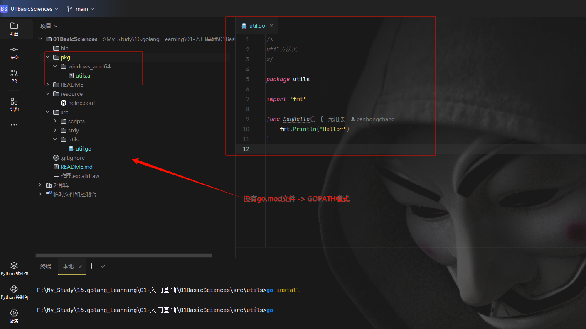
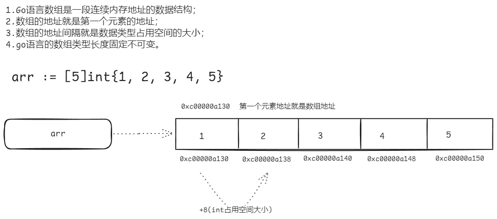
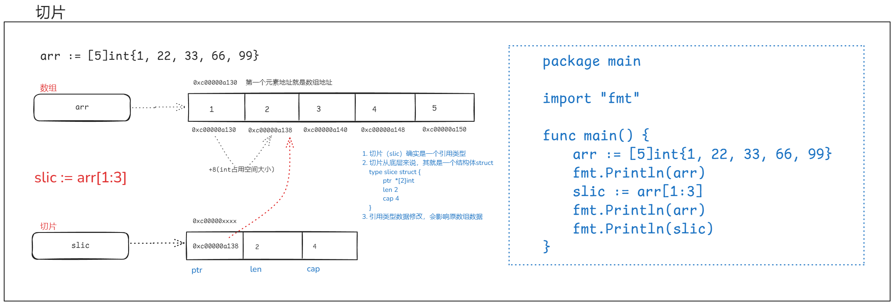
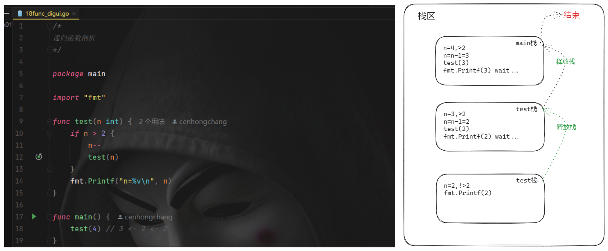

01BasicSciences核心笔记¶
📚 开发环境配置¶
1 编译器下载¶
https://golang.google.cn/doc/install
2 window开发环境配置¶
参照linux配置
3 Linux开发环境配置¶
# 安装位置
/opt/go
# 可执行文件
/opt/go/bin/go
# 环境变量配置 ~/.bashrc 或 /etc/profile
export PATH=/opt/go/bin:$PATH
export GOROOT=/opt/go
export GOPATH=/home/ccplayer/goProjects
export GOBIN=/home/ccplayer/goProjects/bin
4 目录结构¶
/home/ccplayer/goProjects/
-bin
-pkg
-src
-crm
-app.go
-autoclick
-ac.go
5 相关编译、执行命令¶
# 编译与运行
go run app.go
# 编译出二进制文件
go build
go build -o myapp app.go
go install # 默认编译生成位置：$GOPATH/bin
6 扩展：编译结果类型¶
go install 可以产生结果文件存在 $GOPATH/bin 与 $GOPATH/pkg 下面，bin下是可执行文件，而pkg下面是包文件（供其他程序员引用）
GO111MODULE 是 Go 语言的一个环境变量，用于控制 Go 的依赖管理模式（GOPATH 模式 vs Go Modules 模式）。它的名字来源于 Go 1.11 版本首次引入 Modules 功能
所以如果是编译二进制文件：GOPATH 模式 or Go Modules 模式都可以（set GO111MODULE=auto + 生成根目录下go.mod文件）；
如果是编译包文件：GOPATH 模式才会生成（set GO111MODULE=auto + 删除根目录下go.mod文件）
go install
- 产出可执行二进制文件
# 含有main函数的go文件
go build 或 go install
- 产出供其他开发者使用的包文件（.a文件）

IDE - goland可以支持配置单个项目对应的GOPATH目录，这样就方便每个项目单独的开发环境变量，产物生成在当前项目路径。
.a 文件作为中间产物，不支持直接在代码中导入使用。
📚 包管理器¶
1 go mod¶
---------- go mod包管理器模式设置 ----------
查看当前配置：go env
开发推荐使用包的方式，就需要配置go.mod文件
GO111MODULE=off，无模块支持，go命令行将不会支持module功能，寻找依赖包的方式将会沿用旧版本那种通过vendor目录或者GOPATH模式来查找。
GO111MODULE=on，模块支持，go命令行会使用modules，而一点也不会去GOPATH目录下查找。
GO111MODULE=auto，默认值，go命令行将会根据当前目录来决定是否启用module功能，这种情况下可以分为两种情形：
- 当前目录在GOPATH/src之外且该目录包含go.mod文件，开启模块支持；
- 当前文件在包含go.mod文件的目录下面。
设置：GO111MODULE=on（1.11之后版本支持包管理）
go env -w GO111MODULE=on
国内代理设置：
go env -w GOPROXY=https://goproxy.cn,direct
linux：
echo -n "export GO111MODULE=on" >> ~/.profile
echo -n "export GOPROXY=https://goproxy.cn" >> ~/.profile
source ~/.profile
----------理解go语言中包管理方式----------
main包（package main）：默认项目根目录中，且必须写一个main函数（程序入口），编译时，会生成对应的可执行文件。
2 Go语言常用命令¶
go mod tidy # 整理和优化项目的 go.mod 和 go.sum 文件（自动下载及删除依赖）
go mod download # 下载依赖包
go mod edit # 编辑go.mod文件
go mod graph
go mod init # 在当前目录初始化mod
go mod vendor # 将依赖复制到vendor下
go mod verify # 验证依赖是否正确
go mod why # 解释为什么需要依赖
go get 包 # 下载依赖
go get -u 包 # -u：更新或下载最新版本
go get -u <[包]@[版本号]> # 下载指定版本
📚 变量¶
1 变量声明¶
var name string = "chc"
var name = "chc"
name := "chc" // 推荐
2 变量赋值¶
name1 := "tom"
name2 := name1 // 重新开辟一块内存空间存放 - 与都指向同一块内存地址的python不同
对应内存图如下：
📚 常量¶
1 常量声明¶
const (
NAME = "chc"
AGE = 18
GENDER = "男"
)
2 常量建议¶
- 公共常量：首字母大写驼峰式（如
Name）。 - 私有常量：全小写或小驼峰（如
defaultName）。 - 全大写：仅在需要强调常量属性（类似其他语言的
CONST）时使用，但非必须。
📚 流程控制语句¶
在Go语言中，switch语句可以用来判断范围值，这与其他一些语言的switch语句有所不同。以下是几种使用switch判断范围值的方法：
1. 使用表达式switch判断范围¶
score := 85
switch {
case score >= 90:
fmt.Println("优秀")
case score >= 80:
fmt.Println("良好")
case score >= 60:
fmt.Println("及格")
default:
fmt.Println("不及格")
}
2. 使用fallthrough实现范围穿透¶
temperature := 25
switch {
case temperature < 0:
fmt.Println("冰冻")
fallthrough
case temperature < 10:
fmt.Println("寒冷")
case temperature < 20:
fmt.Println("凉爽")
case temperature < 30:
fmt.Println("温暖")
default:
fmt.Println("炎热")
}
3. 多个条件组合判断范围¶
age := 25
switch age {
case 1, 2, 3:
fmt.Println("婴幼儿")
case 4, 5, 6:
fmt.Println("幼儿")
case 7, 8, 9, 10, 11, 12:
fmt.Println("儿童")
default:
if age >= 13 && age < 20 {
fmt.Println("青少年")
} else if age >= 20 && age < 60 {
fmt.Println("成年人")
} else {
fmt.Println("老年人")
}
}
4. 类型switch结合范围判断¶
func checkType(v interface{}) {
switch v := v.(type) {
case int:
if v > 100 {
fmt.Println("大整数")
} else {
fmt.Println("小整数")
}
case float64:
if v > 0 {
fmt.Println("正浮点数")
} else {
fmt.Println("负浮点数或零")
}
default:
fmt.Println("未知类型")
}
}
Go语言的switch语句非常灵活，不需要像其他语言那样在每个case后加break，默认不会穿透到下一个case。
如果需要穿透，可以显式使用fallthrough关键字。
📚编码¶
1 ASCII编码¶
00000000 00000000
... ...
11111111 11111111
最大能表示字符数量：2**16 = 65536 - 1
2 unicode万国码标准¶
unicode是一种设计标准，不是具体的编码实现
00000000 00000000 00000000 00000000
... ...
11111111 11111111 11111111 11111111
最大能表示字符数量：2**32 = 4294967296 - 1
3 utf-8编码¶
对于含有中文表示的开发者来说，最常用的编码（兼容ASCII编码）：范围决定一个汉字一般都是3个字节（24位）
00000000 00000000 00000000
... ...
11111111 11111111 11111111
📚 数据类型¶
1 整型之间转换¶
int 类型数据转换时，需要注意各个位数表示值范围；从范围大的向小的转换，尤其要注意：
func main() {
var a int16 = 128
b := int8(a)
fmt.Println(b)
}
// 结果为 -128 -> 数据溢出，则会按超过的数字轮询对应，不会报错
2 不同类型转换¶
func main() {
// 整型转为字符串
var a int16 = 128
b := strconv.Itoa(int(a)) // 传参只能是int类型；有一个值返回
fmt.Println(b, reflect.TypeOf(b))
// 字符串转为整型
var c string = "100"
result, err := strconv.Atoi(c) // 有两个值返回
if err != nil {
fmt.Println("转换失败：", result, reflect.TypeOf(result), err)
} else {
fmt.Println("转换成功：", result, reflect.TypeOf(result), err)
}
}
3 字符串的本质¶
func main() {
name1 := "ch昌"
name2 := "岑鸿昌"
fmt.Println(len(name1), len(name2)) // 字节长度
fmt.Println(utf8.RuneCountInString(name1), utf8.RuneCountInString(name2)) // 字符长度
fmt.Println([]byte(name1), []byte(name2))
rs1 := []rune(name1)
rs2 := []rune(name2)
fmt.Println(rs1, rs2) // unicode码点切片（十进制）
var ru1 []string
var ru2 []string
myList1 := [2][]rune{rs1, rs2}
myList2 := [2][]string{ru1, ru2}
fmt.Println(myList2)
for i := 0; i < len(myList1); i++ {
for _, v := range myList1[i] {
myList2[i] = append(myList2[i], strconv.FormatInt(int64(v), 16))
}
}
fmt.Println(myList2) // unicode码点切片（十六进制）
}
4 字符串常用方法¶
len(text) // 字节长度
utf8.RuneCountInString(text) // 字符长度
strings.HasPrefix(text, "xxx") // 是否以xxx开头
strings.HasSuffix(text, "xxx") // 是否以xxx结尾
strings.Contains(text, "xxx") // 是否包含xxx
strings.ToLower(text) // 英文变小写
strings.ToUpper(text) // 英文变大写
strings.ToTitle(text) // 英文变大写 - 针对某些拉丁文字，不同于ToUpper
strings.Title(text) // 每个空格之后的第一个字母变大写 -- Go 1.18+ 已弃用
strings.Trim(text, "xxx") // 去除两边子串xxx
strings.TrimLeft(text, "xxx") // 去除左边子串xxx
strings.TrimRight(text, "xxx") // 去除右边子串xxx
strings.Replace(text, "xv", "YY", 1) // 从左到右查找到第1个匹配替换
strings.Replace(text, "xv", "YY", 2) // 从左到右查找到前2个匹配替换
strings.Replace(text, "xv", "YY", -1) // 全部匹配替换
strings.ReplaceAll(text, "x", "Y") // 全部匹配替换
strings.Split(text, " ") // 分割字符串 -> []string 类型的切片
strings.Join([]string{"a", "b", "c"}, "-") // 拼接 -> 将[]string 类型的切片拼接
// 拼接字符串go 1.10+ 版本高效率写法：
var builder strings.Builder
builder.WriteString("a")
builder.WriteString("b")
builder.WriteString("c")
fmt.Println(builder.String())
5 字符串与对应码点数互相转换¶
fmt.Println(string(65)) // A -> 码点转字符
num, size := utf8.DecodeRuneInString("A") // 65 1 -> 字符转码点，多个字符则只处理第一个字符
fmt.Println(num, size)
📚 进制转换函数¶
1 十进制转其他进制（数字转字符串）¶
func main() {
a := 2025
b := strconv.FormatInt(int64(a), 10)
fmt.Println(b, reflect.TypeOf(b)) // 获取数据类型为string
}
2 其他进制转十进制（字符串转数字）¶
func main() {
// strconv.ParseInt函数参数解释：
// 第1个参数：需要转换的字符
// 第2个参数：把文本按填写对应进制去转换
// 第3个参数：限定转换时使用的数字范围(与结果无关)
// 注意：返回结果永远是int64类型的数字
a := "1010000101"
jz := 2
b, err := strconv.ParseInt(a, jz, 64)
if err != nil {
fmt.Println("转换失败：", b, reflect.TypeOf(b)) // 获取数据类型为int64
} else {
fmt.Println("转换成功：", b, reflect.TypeOf(b)) // 获取数据类型为int64
c := strconv.FormatInt(b, 16)
fmt.Println(c) // 十进制转为其他进制，获取数据类型为string
}
}
📚 数组(长度固定)¶
1 基本原理¶

注意事项：数组是值类型，所以针对传入一个数组到函数内修改，当函数执行之后，并不会影响函数外的数组值，相当于在各自的栈内有效。
2 数组可变与拷贝¶
可变：数组长度、类型不能修改，元素可以修改；
拷贝：数组变量在赋值时会重新拷贝
func main() {
name1 := [2]string{"岑鸿昌", "cenhongchang"}
name2 := name1
name2[0] = "chc"
fmt.Println(name1, name2)
// 执行结果：[岑鸿昌 cenhongchang] [chc cenhongchang]
// 结果表明：1.数组元素可以被修改；2.数组变量赋值时，会重新拷贝一份（这与python不同）
}
📚 切片(长度可变)¶
1 切片概念¶
切片(slice)是 Golang 中一种比较特殊的数据结构，这种数据结构更便于使用和管理数据集合。
切片是围绕动态数组的概念构建的，可以按需自动增长和缩小。
切片的动态增长是通过内置函数 append() 来实现的，这个函数可以快速且高效地增长切片，也可以通过对切片再次切割，缩小一个切片的大小。因为切片的底层也是在连续的内存块中分配的，所以切片还能获得索引、迭代以及为垃圾回收优化的好处。

2 切片创建¶
方式一：；
var numbers []int
var numbers = []int{11, 22, 33}
numbers := []int{11, 22, 33}
方式二：make(type, len, cap) //类型、长度、容量
numbers := make([]int, 3, 3}
两种方式创建的区别：
方式一创建的切片事先存在，程序员可见；
方式二创建的切片会创建新的数组，是由切片自身在底层维护，程序员不可见。
易混淆点：
slicePointer := new([]int) // new就是用来创建指针类型变量的，会自动初始化；slicePointer指向长度为0、容量为0的切片
var slicePointer *[]int // slicePointer为nil，类型又是指针类型，所以也称空指针；空指针无法解引用获取值，会报错
3 切片与数组区别¶
| 特性 | 数组（Array） | 切片（Slice） |
|---|---|---|
| 长度 | 固定 | 动态可变 |
| 类型 | 值类型（复制整个数据） | 引用类型（共享底层数组） |
| 内存分配 | 通常在栈上 | 通常在堆上 |
| 声明长度 | 必须显式或通过[...]推断 |
可动态扩展 |
| 性能 | 无GC压力，但复制成本高 | 有GC压力，但操作灵活 |
- 数组：
- 需要固定大小且对内存敏感的场景（如加密算法中的块处理）。
- 明确知道元素数量且无需修改长度时（如月份名称）。
- 切片：
- 绝大多数场景（动态数据集合、函数传参等）。
- 需要动态增删元素时（如读取文件、HTTP请求体）。
// 数组（值传递）
a := [3]int{1, 2, 3}
b := a // 复制整个数组
b[0] = 100 // 修改b不会影响a
fmt.Println(a) // [1 2 3]
// 切片（引用传递）
x := []int{1, 2, 3}
y := x // 共享底层数组
y[0] = 100 // 修改y会影响x
fmt.Println(x) // [100 2 3]
4 切片自动扩容¶
在 Go 语言的最新版本（如 Go 1.19 及以上），切片的自动扩容规则相较于旧版本（如 Go 1.17 及之前）有所调整，采用了更平滑的增长策略，而非简单的“小于 1024 时 2 倍扩容，大于等于 1024 时 1.25 倍扩容”的固定规则。以下是详细的扩容机制：
- 容量较小（< 256）时：仍然采用 2 倍扩容，以减少频繁扩容带来的性能损耗18。
- 容量较大（≥ 256）时：扩容因子会逐步降低，从 2.0 逐渐过渡到 1.25 倍左右，以减少内存浪费110。
4.1 具体扩容因子变化¶
不同初始容量下的扩容因子如下表所示：
| 初始容量（Starting Cap） | 扩容因子（Growth Factor） |
|---|---|
| 256 | 2.0 |
| 512 | 1.63 |
| 1024 | 1.44 |
| 2048 | 1.35 |
| 4096 | 1.30 |
这个变化使得扩容策略更加平滑，避免了大容量切片时内存的过度增长。
4.2 特殊情况¶
- 追加元素超出当前容量 2 倍：如果
append操作后的新长度超过当前容量的 2 倍，则直接按新长度分配容量，而不是按增长因子计算46。 - 内存对齐优化：Go 在计算新容量时还会考虑内存对齐，最终分配的容量可能会比计算值稍大，以减少内存碎片
s := make([]int, 0, 2)
s = append(s, 1, 2) // 容量足够，不扩容
s = append(s, 3) // 容量不足，扩容至 4（2 → 4）
s = append(s, 4, 5) // 容量不足，扩容至 8（4 → 8）
4.3 最佳实践¶
情景1：没有触发自动扩容，切片变量共享底层数组
func main() {
v1 := make([]int, 1, 3) // [0]
v2 := append(v1, 99) // [0 99]
fmt.Println(v1, v2) // [0] [0 99]
v1[0] = -1
fmt.Println(v1, v2) // [-1] [-1 99]
}
情景2：触发自动扩容，新的切片会新对应一个新的底层数组
func main() {
v1 := make([]int, 1, 3) // [0]
v2 := append(v1, 99, 88, 77) // [0 99 88 77] -> 添加元素已经超过容量，会自动扩容
fmt.Println(v1, v2) // [0] [0 99 88 77]
v1[0] = -1
fmt.Println(v1, v2) // [-1] [0 99 88 77]
}
- 预分配容量：如果已知切片最终大小，建议使用
make([]T, 0, cap)预分配足够容量，避免频繁扩容 - 避免共享底层数组：扩容后新切片可能指向新内存，而旧切片仍指向原数组，需注意数据一致性
5 切片相关操作¶
5.1 基本操作¶
val := make(int[], 4, 5)
len(val) // 长度
cap(val) // 容量
val[0] // 索引取值；索引最大值：len(val) - 1
val[1:3] // 切片继续切片，获取第2个-第3个元素（取前不取后）
val[1:]
val[:3] // 注意：切片通过再切片后得到的数据对应内存地址与原切片的对应，所以新切片或原切片修改某个元素值，都会互相影响被修改
5.2 追加元素¶
v1 := []int{11, 22, 33}
vx := []int{88, 99}
v2 := append(v1, 44, 55, 66)
v3 := append(v1, vx...)
5.2 “ 删除”元素¶
// go语言删除元素使用链表，这里用截取拼接方式（一般用的少）
func main() {
v1 := []int{1, 2, 3, 4, 5, 6}
fmt.Println(v1)
deleteIndex := 2
v2 := append(v1[:deleteIndex], v1[deleteIndex+1:]...)
fmt.Println(v2) // [1 2 4 5 6]
fmt.Println(v1) // [1 2 4 5 6 6]
}
// 这种方式注意：原切片v1会被修改
5.3 插入元素¶
func main() {
v1 := []int{11, 22, 33, 44, 55, 66}
insertIndex := 3 // 在索引3的位置插入99
result := make([]int, 0, len(v1)+1)
result = append(result, v1[:insertIndex]...)
result = append(result, 99)
result = append(result, v1[insertIndex:]...)
fmt.Println(result)
}
// 效率低下 - 不推荐；不要直接用v1取切片去追加，那样也会导致元素覆盖问题
📚 哈希表-map¶
1 基本介绍¶
map 是一种无序的集合类型，它将唯一键(key)映射到值(value)：
- 键(key)：必须是可比较是否相等的类型
-
可比较类型归类名称：booleans、numbers、strings、pointers、元素类型为可比较的channel和arrays、全部字段为可比较的structs
-
具体类型：
int,string，bool,float,array, 指针等，但不能是slice,map,function） -
值(value)：可以是任意类型
-
无序性：元素存储和遍历顺序不固定
// 声明
var m map[keyType]valueType
// 初始化
m = make(map[keyType]valueType)
// 声明并初始化简写
m := make(map[string]int)
m := map[string]int{"a": 1, "b": 2}
1.1 重要特性¶
- 引用类型：map是引用类型，传递map不会拷贝底层数据
- 动态增长：map会自动扩容，无需手动管理容量
- 非线程安全：并发读写需要加锁（或使用
sync.Map） - 零值：未初始化的map零值是
nil，不能直接使用
1.2 性能特点¶
- 平均时间复杂度：
- 插入：O(1)
- 查找：O(1)
- 删除：O(1)
- 内存开销比slice大
- 不适合小数据量（少量元素时slice+线性搜索可能更快）
1.3 使用场景¶
- 快速查找表
- 去重操作
- 缓存实现
- 对象属性存储
1.4 遍历特性¶
Go 语言中，在 range 遍历 map 时直接删除当前正在遍历的元素是安全的
经典面试题：counter的值是多少？
答案：2或者3 （map是无序的，range遍历是遍历快照，修改原map不影响正在遍历的快照，但是原map会改变）
package main
import "fmt"
func main() {
var m = map[string]int{
"A": 21,
"B": 22,
"C": 23,
}
counter := 0
for k, v := range m {
if counter == 0 {
delete(m, "A")
}
counter++
fmt.Println(k, v)
}
fmt.Println("counter is ", counter)
}
Go 的 range 遍历 map 实现方式：
- 内部会先对 map 的状态做一个快照
- 遍历是基于这个快照进行的
- 修改（包括删除）操作会影响原始 map，但不会影响正在进行的遍历
2 声明 & 初始化¶
userInfo := map[string]string{}
userInfo := map[string]string{"name":cenhongchang, "age": 18}
fmt.Println(userInfo["name"]) // 打印name的值
userInfo["name"] = "chc" // 修改name的值
userInfo := make(map[int]int)
userInfo := make(map[int]int， 10) // 指定长度
var row map[int]int
// row["name"] = "chc" -> 会报错，一般只用于整体赋值情况
pointer := new(map[int]int) // 指针变量，也是用于整体赋值，相当于声明这是一个map的指针变量
示例：
func main() {
userInfo := map[string]string{}
userInfo["name"] = "chc"
fmt.Println(userInfo)
pointer := new(map[string]string)
pointer = &userInfo
newData := *pointer
newData["age"] = "18"
fmt.Println(userInfo) // 这时候都指向同一地址
fmt.Println(newData)
}
3 长度、容量及操作¶
func main() {
userInfo := make(map[string]string, 10) // 容量不是长度，也没有像切片求容量的cap函数 -- 切记
userInfo["姓名"] = "cenhongchang"
userInfo["年龄"] = "18"
userInfo["身高"] = "172"
fmt.Println(len(userInfo))
fmt.Println(userInfo)
userInfo["体重"] = "135" // 增加
delete(userInfo, "体重") // 删除
userInfo["身高"] = "180" // 修改
fmt.Println(userInfo)
fmt.Println(userInfo["姓名"]) // 查看
}
4 嵌套key¶
make(map[ [5]int ]string) // 数组
// make(map[ []int ]string) // 切片 key -> 报错不可哈希
// make(map[ map[int]string ]string) // map key -> 报错不可哈希
5 底层存储原理¶
创建map -> hmap -> 桶 -> bmap
创建 -> make(map[string]string, 10)
hmap -> 根据算法规则自动计算出合适的B值
桶的数量 -> 2ᴮ（2的B次方个）
bmap -> 每个桶正常最多存储8个键值对；当然可以使用指针扩展溢出桶
5.1 初始化¶
5.2 写入数据¶
5.3 读取数据¶
5.4 扩容¶
5.5 迁移¶
📚 指针与new以及make¶
Go 语言中，指针是一种存储变量内存地址的特殊变量。它允许你直接访问和修改内存中的数据，而不是操作数据的副本。这是高效操作大型数据结构和实现某些高级特性的关键机制。
1 内存地址与值¶
- 每个变量都存储在内存的某个位置（地址）。
- 指针保存的是这个地址，而不是值本身。
var a int = 42 // 声明一个整型变量 a
var p *int = &a // p 是指向 a 的指针（保存 a 的内存地址）
2 操作符¶
&（取地址符）：获取变量的内存地址
fmt.Println(&a) // 输出：0xc00000a0c8（示例地址）
*（解引用符）：通过指针访问或修改该地址的值
fmt.Println(*p) // 输出：42（读取 p 指向的值）
*p = 100 // 通过 p 修改 a 的值
fmt.Println(a) // 输出：100
3 指针的典型用途¶
3.1 避免大数据的拷贝¶
type BigStruct struct { data [10000]int }
func ModifyByValue(s BigStruct) { /* 操作副本，效率低 */ }
func ModifyByPointer(s *BigStruct) { /* 直接操作原数据 */ }
func main() {
big := BigStruct{}
ModifyByPointer(&big) // 只传递指针（8字节），避免拷贝整个结构体
}
3.2 修改函数外部的变量¶
func ResetToZero(n *int) {
*n = 0 // 修改外部变量
}
func main() {
x := 99
ResetToZero(&x)
fmt.Println(x) // 输出：0
}
3.3 实现引用语义（如修改结构体字段）¶
type User struct{ Name string }
func (u *User) Rename(newName string) {
u.Name = newName // 修改原结构体
}
func main() {
user := User{"Alice"}
user.Rename("Bob") // Go 自动转换为指针调用
fmt.Println(user.Name) // 输出："Bob"
}
4 指针的注意事项¶
4.1 空指针（nil）与 new关键字¶
- 未初始化的指针值为
nil，解引用会引发 panic：
//无初始化的指针
var p *int
fmt.Println(*p) // panic: runtime error: invalid memory address
- 有初始化的指针
//有初始化的指针
tpointerb := new(int)
fmt.Println("tpointerb:", tpointerb)
*tpointerb = 10000000
fmt.Println("tpointerb:", tpointerb)
- 使用前务必检查：
if p != nil {
*p = 42
}
4.2 不要对栈上逃逸的指针过度优化¶
- Go 编译器会自动决定变量分配在栈还是堆上，无需手动管理内存。
4.3 指针与并发安全¶
- 多个 goroutine 同时通过指针修改同一数据时，需用
sync.Mutex等机制保护。
5 make函数¶
make也是用于内存分配的，区别于new，它只用于slice、map以及chan的内存创建，而且它返回的类型就是这三个类型本身，而不是他们的指针类型，因为这三种类型就是引用类型，所以就没有必要返回他们的指针了。make函数的函数签名如下:
func make(t Type, size ...IntegerType) Type
make函数是无可替代的，我们在使用slice、map以及channel的时候,都需要使用make进行初始化，然后才可以对它们进行操作。
总之：在 Go 语言中，make 是一个内置函数，专门用于初始化并分配内存给三种引用类型：切片（slice）、映射（map） 和通道（channel）。
它的核心作用是创建这些复杂类型的实例，并设置好底层数据结构和初始属性。
5.1 核心作用总结：¶
- 分配内存：为底层数据结构分配内存空间
- 初始化数据结构：设置内部属性（如长度、容量、缓冲区等）
- 返回可直接使用的实例：返回初始化后的引用类型（非指针）
5.2 为什么需要 make？（与 new 的对比）¶
| 特性 | make |
new |
|---|---|---|
| 适用类型 | slice, map, channel | 任意类型 |
| 返回值 | 初始化后的引用类型 | 指向零值内存的指针 (*T) |
| 初始化程度 | 完全初始化，可直接使用 | 仅分配零值内存，未初始化数据结构 |
| 内存分配 | 分配+初始化数据结构 | 仅分配内存 |
// 错误示例：用 new 创建切片
sp := new([]int) // 返回 *[]int 指针
*sp = append(*sp, 1) // 需要额外操作才能使用
// 正确示例：用 make 创建切片
s := make([]int, 0, 10) // 直接可用的切片
s = append(s, 1) // 直接操作
6 何时使用指针？¶
| 场景 | 推荐方式 |
|---|---|
| 需要修改函数外部变量 | 指针 |
| 操作大型结构体/数组 | 指针（避免拷贝） |
| 方法需修改接收者 | 指针接收者 |
| 基本类型（int等）小数据 | 值传递 |
Go 中切片（slice）、映射（map）、通道（channel）本身是引用类型，传递时无需显式使用指针。
7 指针两个高级操作¶
7.1 数组地址¶
func main() {
arr := [3]int{1, 2, 3}
p1 := &arr
p2 := &arr[0]
fmt.Println(p1, p2)
fmt.Println(reflect.TypeOf(p1), reflect.TypeOf(p2))
}
/*
&[1 2 3] 0xc000012108
*[3]int *int
*/
7.2 指针加减¶
func main() {
dataList := [3]int{11, 22, 33}
p1 := &dataList[0]
p2 := &dataList[1]
p3 := &dataList[2]
fmt.Println(p1, p2, p3)
ptr := unsafe.Pointer(&dataList[0]) // 指针 -> unsafe.Pointer
targetAddr := uintptr(ptr) + 8*1 // 继续 unsafe.Pointer -> uintptr + 偏移量（对应类型所需字节数/int64每个元素相差8个字节）
newPtr := unsafe.Pointer(targetAddr) // uintptr -> unsafe.Pointer （逆回）
value := (*int)(newPtr) // unsafe.Pointer -> 指针（逆回）
fmt.Println(value, *value) // 打印指针地址、对应的值
}
/*
0xc000012108 0xc000012110 0xc000012118
0xc000012110 22
*/
📚 函数¶
Go语言中的函数是基本的代码块，用于执行特定任务。以下是Go函数的主要特性：
func 函数名(参数列表) (返回值列表) {
// 函数体
}
// 无参数无返回值
func sayHello() {
fmt.Println("Hello!")
}
// 有参数无返回值
func greet(name string) {
fmt.Printf("Hello, %s!\n", name)
}
// 有参数有返回值
func add(a, b int) int {
return a + b
}
// 多返回值
func swap(x, y string) (string, string) {
return y, x
}
// 命名返回值
func divide(a, b float64) (result float64, err error) {
if b == 0.0 {
err = errors.New("division by zero")
return
}
result = a / b
return
}
1 一等公民：函数可以作为值传递、作为参数和返回值¶
func apply(op func(int, int) int, a, b int) int {
return op(a, b)
}
2 匿名函数（闭包）¶
add := func(a, b int) int {
return a + b
}
3 可变参数¶
func sum(nums ...int) int {
total := 0
for _, num := range nums {
total += num
}
return total
}
4 延迟执行（defer）¶
func readFile() {
file, err := os.Open("file.txt")
if err != nil {
return
}
defer file.Close() // 确保函数返回前关闭文件
// 处理文件
// ... ...
}
5 方法（与类型关联的函数）¶
type Circle struct {
Radius float64
}
func (c Circle) Area() float64 {
return math.Pi * c.Radius * c.Radius
}
Go语言的函数设计简洁而强大，支持多种编程范式，是构建Go程序的基础模块。
6 重点谈闭包¶
闭包(closure)是指一个函数值引用了其函数体之外的变量。
示例：该示例在早期go版本，切片元素每个函数打印结果都会是5（循环已执行完毕，此时：i=5），但最新版本已修复，结果如下
package main
import "fmt"
func main() {
var funcList []func()
for i := 0; i < 5; i++ {
f := func() {
fmt.Println(i)
}
funcList = append(funcList, f)
}
for _, f := range funcList {
f()
}
}
// 0
// 1
// 2
// 3
// 4
package main
import "fmt"
func main() {
var funcList []func()
for i := 0; i < 5; i++ {
f := func(arg int) func() {
return func() {
fmt.Println(arg)
}
}(i)
funcList = append(funcList, f)
}
for _, f := range funcList {
f()
}
}
// 0
// 1
// 2
// 3
// 4
7 函数递归剖析¶

递归函数就是每次压入新的栈，从最里层的栈还是由内向外运行，逐级释放。
8 命名返回值¶
- 在函数声明时直接为返回值指定名称
- 这些名称在函数体内作为普通变量使用
- 函数结束时可以直接
return而不需要显式指定返回值
func myTest(a, b int) (result int, args []int) {
result = a / b
args = []int{a, b}
return // 等价于 return result, args
}
func main() {
result, args := myTest(10, 3)
fmt.Println("计算结果:", result)
fmt.Println("传入参数:", args)
}
// 计算结果: 3
// 传入参数: [10 3]
9 异常处理（defer...recover...）¶
func myTest(a, b int) (result int, err error) { // 提前指定返回变量的初始化；error类型零值为nil
defer func() {
if r := recover(); r != nil {
fmt.Println("捕获异常：", r)
err = errors.New("除数不能为零") // 修改返回变量
}
}()
result = a / b
return result, err
}
func main() {
result, err := myTest(10, 0)
if err != nil {
fmt.Println("发生错误:", err)
return
}
fmt.Println("计算结果:", result)
}
// 捕获异常： runtime error: integer divide by zero
// 发生错误: 除数不能为零
📚 结构体¶
type 结构体名称 struct {
字段 类型
...
}
package main
import "fmt"
type Person struct {
name string
age int
gender bool
height float64
weight float64
}
func main() {
cenhongchang := Person{name: "cenhongchang", age: 20, gender: true, height: 1.75, weight: 60}
fmt.Println(cenhongchang) // {cenhongchang 20 true 1.75 60}
}
1 结构体定义¶
// 字段单独写
type Person struct {
name string
age int
gender bool
height float64
weight float64
}
// 同类型字段一起写
type Person struct {
name string
age int
gender bool
height, weight float64
}
// 作为其中一个字段嵌套
type Animal struct {
dog string
cat string
person Person
}
// 匿名字段 -> 省略字段名，默认就与嵌套进来的结构体名一致
type NewPerson struct {
Person
hobby []string
}
2 结构体指针¶
func main() {
// 结构体指针 -> 同样可以直接获取属性值
p1 := &Person{name: "cenhongchang", age: 20, gender: true, height: 1.75, weight: 60}
fmt.Println(p1.name)
p2 := Person{name: "cenhongchang", age: 20, gender: true, height: 1.75, weight: 60}
fmt.Println(&p2.name) // 先计算属性再计算指针 0xc000024750
fmt.Println((&p2).name) // 先计算指针再计算属性 cenhongchang
}
3 结构体赋值（拷贝）¶
func main() {
// 结构体指针 -> 同样可以直接获取属性值
p1 := Person{name: "cenhongchang", age: 20, gender: true, height: 1.75, weight: 60}
p2 := p1
p1.name = "chc"
fmt.Println(p1.name) // chc
fmt.Println(p2.name) // cenhongchang
}
4 结构体指针赋值（引用）¶
func main() {
// 结构体指针 -> 同样可以直接获取属性值
p1 := &Person{name: "cenhongchang", age: 20, gender: true, height: 1.75, weight: 60}
p2 := p1
p1.name = "chc"
fmt.Println(p1.name) // chc
fmt.Println(p2.name) // chc
}
5 结构体嵌套数组、切片等赋值拷贝¶
func main() {
type Address struct {
city, state string
}
type Person struct {
name string
age int
hobby [2]string
num []int
parent map[string]string
address Address
}
p1 := Person{
name: "二狗子",
age: 19,
hobby: [2]string{"裸奔", "大保健"},
num: []int{69, 19, 99, 38},
parent: map[string]string{"father": "Alex", "mother": "Monika"},
}
fmt.Println(p1)
}
其实本质上都拷贝了，只不过由于数据存储方式的不同，导致拷贝的有些是数据，有些是内存地址（指针）。
感觉拷贝：字符串、数组、整型等
感觉不拷贝：map、切片
注意：对于那些默认拷贝的情况，可以改变为指针类型，让数据实现同步修改。
p1 := Person{
...
hobby: *[2]string{"裸奔", "大保健"},
...
}
6 获取结构体字段名与标签¶
func main() {
type Address struct {
city, state string
}
type Person struct {
name string "姓名"
age int "年龄"
hobby [2]string "爱好"
num []int "电话"
parent map[string]string "父母"
address Address "地址"
}
p1 := Person{
name: "二狗子",
age: 19,
hobby: [2]string{"裸奔", "大保健"},
num: []int{69, 19, 99, 38},
parent: map[string]string{"father": "Alex", "mother": "Monika"},
}
fmt.Println(p1)
p1Type := reflect.TypeOf(p1)
for i := 0; i < p1Type.NumField(); i++ {
fmt.Println(p1Type.Field(i).Name)
fmt.Println(p1Type.Field(i).Tag)
}
}
7 结构体本身与指针用法¶
type Person struct {
name string
age int
}
var p = Person{"Tom", 30}
// 使用结构体本身，会拷贝，用的是不同的两份数据
func doSomething() Person {
return p
}
func main() {
data := doSomething()
data.name = "Jerry"
fmt.Println(p.name) // 未改变 Tom
fmt.Println(data.name) // 已改变 Jerry
}
// 使用指针，不会拷贝，都使用一份数据
func doSomething() *Person {
return &p
}
func main() {
data := doSomething()
data.name = "Jerry"
fmt.Println(p.name) // 未改变 Tom
fmt.Println(data.name) // 已改变 Jerry
}
8 类型方法与结构体方法定义¶
8.1 项目开发中会为type声明类型编写一些方法，从而实现对象.方法操作¶
type MyInt int
// Incr 定义类型方法 -> i相当于对象本身(类比self)
func (i MyInt) Incr(num1, num2 int) int {
return num1 + num2 + int(i)
}
func main() {
v1 := MyInt(10)
v2 := v1
fmt.Println(v1, v2)
v3 := v1.Incr(1, 2) // 10+1+2=13
fmt.Println(v3)
}
也可以写为：
type MyInt int
// Incr 定义类型方法 -> i相当于对象本身(类比self)
func (i *MyInt) Incr(num1, num2 int) int {
return num1 + num2 + int(*i)
}
func main() {
v1 := MyInt(10)
v2 := v1
fmt.Println(v1, v2)
v3 := v1.Incr(1, 2) // 10+1+2=13
fmt.Println(v3)
}
// 用不到i的写法
func (_ *MyInt) Incr(num1, num2 int) int {
return num1 + num2
}
-
func (i MyInt) Incr(num1, num2 int) int
-
这是一个值接收者方法
-
操作的是 MyInt 的副本
-
对 i 的修改不会影响原始值
-
func (i *MyInt) Incr(num1, num2 int) int
-
这是一个指针接收者方法
-
操作的是 MyInt 的实际地址
-
可以通过 *i 修改原始值
总结：不需要修改接收者的值（只读操作）就不用指针；但对于接收者是较大的结构体，需要避免复制开销**，就用指针；具体看场景选择用哪一种。
8.2 结构体方法¶
多数情况都是使用指针（确保使用一份数据）;
不使用指针的情况--函数内会拷贝新数据，有以下示例：
type Person struct {
name string
age int
gender bool
}
// 定义两个结构体函数，分别使用非指针、指针参数
func (p Person) getRealAge(a, b int) {
p.age += a + b
}
func (p *Person) getRealAgeWithPointer(a, b int) {
p.age += a + b
}
func main() {
p := new(Person)
p.name = "John"
p.age = 18
p.gender = true
fmt.Println(reflect.TypeOf(p))
fmt.Println(reflect.TypeOf(p.age))
fmt.Println(p.age) // 18 - 原始值
p.getRealAge(1, 1)
fmt.Println(p.age) // 18 - 没改变--函数内值拷贝处理
p.getRealAgeWithPointer(1, 1) // 20 - 已改变--函数内操作原始值处理
fmt.Println(p.age)
}
总结：
1. 在结构体中，我们不需要关注调用结构体方法是`指针类型.方法`还是`值类型.方法`，它内部会根据你函数定义接收者（func关键字之后括号里的内容）是指针类型还是值类型接收者决定。（因为我们总是会考虑：`指针.方法`为啥没有异常？ -> 结构体内部会自动判断处理）；
1. 示例没有返回值的时候，用函数传入指针就改变了原始值。
9 结构体方法继承¶
type Father struct {
name string
age int
}
type Son struct {
name string
age int
Father // -> 继承父方法，需要匿名，否则不会继承父结构体方法
}
func (s *Son) PlayGame(gameName string) int {
fmt.Println("son's skill play game is: " + gameName)
return 666
}
func (f *Father) MakeMoney(workName string) int {
fmt.Println("father's skill work is: " + workName)
return 999
}
func main() {
s := Son{name: "son", age: 18}
f := Father{name: "father", age: 40}
s.PlayGame("lol") // son's skill play game is: lol
f.MakeMoney("coding") // father's skill work is: coding
s.MakeMoney("teach") // father's skill work is: teach -> 继承父方法
}
10 结构体工厂函数¶
// 定义为私有结构体
type file struct {
fd int
name string
}
// NewFile 创建结构体工厂函数 -- 定义为公有工厂函数
func NewFile(fd int, name string) *File {
// 其他封装代码
return &File{fd, name}
}
func main() {
f1 := NewFile(10, "./test1.txt")
f2 := NewFile(80, "./test2.txt")
fmt.Println(f1)
fmt.Println(f2)
}
如何保证代码一致性？
强制使用工厂函数创建：结构体本身定义是私有，工厂函数定义是公有即可解决。
📚 接口¶
1 接口定义¶
// 约束函数
type 接口名称 interface {
方法名(参数列表) (返回值列表) {
}
}
// 约束类型
type 接口名称 interface {
类型1 | 类型2 | 类型3
}
// 示例
type Base interface {
f1()
f2() int
f3(a, b int) int
f4(a,b string) (string, error)
}
type baseType interface {
int | string
}
接口中的方法只写输入输出规范格式，不写具体实现。
2 接口作用¶
go程序开发中，接口有两大作用：代指类型 与 约束输入输出
2.1 空接口-代指任意类型¶
go语言源码中，空接口就包含两个信息：
// 源码路径 .../runtime/runtime2.go
type eface struct {
_type *_type // 类型信息
data unsafe.Pointer // 数据信息 - 指向数据的指针
}
示例：
type Base interface{} // 空接口，什么都满足
func main() {
slice := make([]Base, 0)
//slice := make([]interface{}, 0) // 简写形式
slice = append(slice, nil)
slice = append(slice, [3]int{1, 2, 3})
slice = append(slice, []int{11, 22, 33})
slice = append(slice, "你好")
fmt.Println(slice)
}
// [<nil> [1 2 3] [11 22 33] 你好]
go1.18+支持使用any代指空接口: type any = interface{}
注意：有一种空集接口（这种是写法错误，但又可以通过编译）
type Empty interface{ // 分行写导致空集接口，什么都不满足
string
int
}
2.2 接口转化指定类型的数据¶
type Person struct {
name string
age int
}
func doSomething(arg interface{}) Person {
tp, ok := arg.(Person)
if ok {
fmt.Println("转换成功：", tp, reflect.TypeOf(tp))
} else {
fmt.Println("转换失败!")
}
return tp
}
func main() {
p := Person{name: "张三", age: 18}
doSomething(100) // 转换失败!
doSomething(p) // 转换成功： {张三 18} main.Person
}
2.3 接口类型断言¶
type Person struct {
name string
age int
}
func doSomething(arg interface{}) {
switch tp := arg.(type) { // switch 与 类型判断的固定用法
case Person:
fmt.Println("struct", tp.name)
case string:
fmt.Println("string", tp)
case int:
fmt.Println("int", tp)
default:
fmt.Printf("%T %v\n", tp, tp)
}
}
func main() {
doSomething(100)
doSomething("cenhc")
doSomething(Person{"cenhh", 23})
doSomething([]int{1, 2, 3})
}
//int 100
//string cenhc
//struct cenhh
//[]int [1 2 3]
2.4 接口约束与规范¶
传入的实例一般是结构体指针
// 定义接口约束
type IBase interface {
f1() int
}
// 结构体 Person
type Person struct {
name string
age int
}
// 结构体 Person 类型方法
func (p *Person) f1() int {
return p.age
}
// 结构体 User
type User struct {
username string
password string
}
// 结构体 User 类型方法
func (u *User) f1() int {
return len(u.username)
}
// 执行函数 - 自动判断传入对象类型调用对应方法
func doSomething(ibase IBase) {
result := ibase.f1() // 基于接口传入多种类型（多态）自动调用对应方法
fmt.Println("执行结果：", result)
}
func main() {
p := &Person{name: "John", age: 30}
u := &User{username: "john_doe", password: "secret"}
doSomething(p)
doSomething(u)
}
//执行结果： 30
//执行结果： 8
实际案例：同时向微信、邮箱发送注册成功消息
/*
接口实现场景：同时向微信、邮箱发送注册成功消息
*/
package main
import "fmt"
type IBase interface {
send() bool
}
type Email struct {
email string
content string
}
func (e *Email) send() bool {
fmt.Println(e.content)
return true
}
type Wechat struct {
wid string
content string
}
func (e *Wechat) send() bool {
fmt.Println(e.content)
return true
}
// 使用接口切片处理
func runSend(ibaseList []IBase) {
for _, obj := range ibaseList {
obj.send()
}
}
func main() {
e := &Email{
email: "123@qq.com",
content: "邮箱端通知：注册成功！",
}
w := &Wechat{
wid: "ccplayer",
content: "微信端通知：注册成功！",
}
runSend([]IBase{e, w})
}
//邮箱端通知：注册成功！
//微信端通知：注册成功！
📚 泛型（go1.18+）¶
1 基本语法¶
泛型适合解决的问题场景：减少重复代码：避免为不同类型编写几乎相同的函数
- 语法：Go使用方括号
[]而非尖括号<> - 实现方式：Go在编译时生成具体类型的代码，而非运行时擦除类型
- 限制：Go泛型相对保守，不支持某些高级特性如运算符重载
- 注意：泛型不是说可以的多种数据类型混杂在一起，他只是其中一种；可以混杂在一起的数据类型是空接口
// 特别注意：泛型约束基础数据类型变量--使用接口
type MyVar interface {
int | string | float32 | float64
}
// MySlice 泛型切片定义
type MySlice[T int | string] []T
// MyMap 泛型Map定义
type MyMap[K int | string, V float64 | float32] map[K]V
// MyStruct 泛型结构体定义
type MyStruct[T int | string] struct {
data []T
length int
max, min, avg T
}
// 定义一个类型约束
type Numeric interface {
int | float64
}
// 泛型函数：计算切片中所有元素的和
func Sum[T Numeric](numbers []T) T {
var total T
for _, num := range numbers {
total += num
}
return total
}
func main() {
// 泛型类型--实例化
ints := []int{1, 2, 3, 4}
floats := []float64{1.1, 2.2, 3.3}
fmt.Println(Sum(ints)) // 输出: 10
fmt.Println(Sum(floats)) // 输出: 6.6
}
2 基于基础类型的自定义类型泛型¶
// 基于基础类型的自定义类型
type MyInt int
type YourInt MyInt
// 元素可以是基础类型为int的类型，包括自定义类型
type IntSlice[T ~int] []T // ~符号表示底层类型约束
func main() {
a := IntSlice[MyInt]{1, 2, 3}
b := IntSlice[YourInt]{1, 2, 3}
fmt.Println(a)
fmt.Println(b)
// 如果需要相加，则将b转换为IntSlice[MyInt]类型
var convertedB IntSlice[MyInt]
for _, v := range b {
convertedB = append(convertedB, MyInt(v))
}
result := append(a, convertedB...)
fmt.Println(result) // 输出: [1 2 3 1 2 3]
}
3 基于泛型继续定义泛型¶
type MySlice[T int | string | float32 | float64] []T
type FloatSlice[T float32 | float64] MySlice[T] // 表示元素类型必须属于MySlice定义类型，含其他类型会报错
type MyStruct[T float32 | float64] struct {
FiledsA MySlice[T]
FiledsB FloatSlice[T]
Height, Weight T
}
type MyMap[K int | string, V float32 | float64] map[K]MySlice[V]
func main() {
var a = MyStruct[float32]{
FiledsA: []float32{1, 2, 3},
FiledsB: []float32{4, 5, 6},
Height: 1.75,
Weight: 80.0,
}
fmt.Println(a)
var b = MyMap[int, float32]{ // 注意格式变化
1: {1, 2, 3},
2: {4, 5, 6},
}
fmt.Println(b)
}
基于泛型定义，我们逐步清晰：T表示的就是基础数据类型，比如：int/float32/float64/string/bool等
4 规避指针类型写法¶
// type myList1[T *int] []T -> 错误写法，会被认为是乘法运算，需要末尾加“,”；或者使用接口定义
type myList1[T *int,] []T
type myList2[T interface{ *int }] []T
5 泛型接收器¶
一般应用场景：定义泛型结构体 -> 定义结构体方法 -> 定义方法接收器（实例化对象调用具体方法）
泛型接收器的作用： 让一组具有共同处理方法的数据，可以实现统一方法调用；这里不同于接口对每个实现再去调用方式，示例如下：
/*
定义泛型数值型的数据（int/float32/float64...），可调用其新增元素Add方法，实时更新最大值/最小值
*/
package main
import (
"fmt"
"sync"
)
// 定义结构体
type myStruct[T int | float32 | float64] struct {
data []T
max T
min T
sm sync.Mutex // 考虑并发写入元素，使用互斥锁
}
// 定义结构体方法 - 指针表示操作原始数据
func (m *myStruct[T]) Add(ele T) *myStruct[T] {
m.sm.Lock()
defer m.sm.Unlock()
m.data = append(m.data, ele)
if len(m.data) == 1 {
m.max = ele
m.min = ele
return m
}
if m.max < ele {
m.max = ele
}
if m.min > ele {
m.min = ele
}
return m
}
func (m *myStruct[T]) GetMax() T {
return m.max
}
// 泛型函数
func myInitStruct[T int | float32 | float64](value T) *myStruct[T] {
p := new(myStruct[T])
p.Add(value)
return p
}
func main() {
// int类型对象
p1 := new(myStruct[int])
p1.Add(1).Add(2).Add(3).Add(5).Add(-10)
fmt.Println(p1.data, p1.max, p1.min, p1.GetMax())
// float64类型对象使用同样方法处理
p2 := new(myStruct[float64])
p2.Add(1.1).Add(2.2).Add(3.3).Add(5.5).Add(-10.1)
fmt.Println(p2.data, p2.max, p2.min, p2.GetMax())
p3 := myInitStruct(1) // 泛型函数创建结构体-返回指针
fmt.Println(p3.data, p3.max, p3.min, p3.GetMax())
}
6 泛型函数¶
func Sum[T int | string | float32 | float64](args ...T) (result T) {
for _, v := range args {
result += v
}
return
}
func main() {
result := Sum("你好！", "中国", "--HELLO")
fmt.Println(result)
}
7 泛型接口¶
// 定义泛型接口
type Data[T int | string] interface {
Process(T) (T, error)
Save() error
}
// 定义结构体
type JsonData struct {
name string
age int
}
// 定义结构体方法-int类型
func (j *JsonData) Process(data int) (int, error) {
return data + 10, nil
}
func (j *JsonData) Save() error {
return nil
}
// 实例具体使用
func doSomething(d Data[int], v int) {
result, _ := d.Process(v)
fmt.Println("result:", result)
}
func doSomethingNew(d Data[string], v string) {
result, _ := d.Process(v)
fmt.Println("result:", result)
}
func main() {
var person = &JsonData{name: "John", age: 30}
doSomething(person, 100)
// var personNew = &JsonData{name: "tom", age: 50}
// doSomethingNew(personNew, 200) // 会报错 -- 结构体没有实现string类的具体方法
}
8 泛型带来的接口语法变化¶
/**/
package main
import "fmt"
// 定义接口（混合类型与函数约束）
type Data interface {
~int | ~float64
Process(p int) (int, error)
Save() error
}
// 定义自定义类型（底层类型必须是接口约束的类型之一）
type myType int
// 定义结构体方法-int类型
func (j myType) Process(data int) (int, error) {
return data + 10, nil
}
func (j myType) Save() error {
return nil
}
// 具体实现--需要使用泛型函数
func doSomething[T Data](d T, v int) {
result, _ := d.Process(v)
fmt.Println("result:", result)
}
func main() {
var i myType = 10
doSomething(i, 10)
}
9 预定义接口的使用¶
9.1 支持可比较是否相等的类型¶
定义泛型Map时，键必须是可比较是否相等的，使用的关键字：comparable；值用空接口即可（any）
type myMap[K comparable, V any] map[K]V
9.2 支持可比较大小的类型¶
类型集合分类（约定俗成的代码）：
// 浮点型
type Float interface {
~float32 | ~float64
}
// 有符号数
type Singed interface {
~int8 | ~int16 | ~int32 | ~int64
}
// 无符号数
type Unsigned interface {
~uint8 | ~uint16 | ~uint32 | ~uint64
}
// 整型
type Integer interface {
Singed | Unsigned
}
// 可比较排序型
type Ordered interface {
Integer | Float | ~string
}
// 数值型
type Number interface {
Integer | Float
}
📚 反射¶
反射是Go语言中一个强大但需要谨慎使用的特性，它允许程序在运行时检查类型信息、操作对象和调用方法。下面是对Go语言反射的详细介绍：
1 基本概念¶
反射主要通过reflect包实现，核心是两个类型：
reflect.TypeOf- 表示Go语言的类型信息reflect.ValueOf- 表示一个值的运行时表示
2 反射的三大定律¶
- 源码中的定义：反射实际上就是interface与Type、Value之间转换过程
func typeOf(i any) Type {} // interface -> Type
func valueOf(i any) Value {} // interface -> Value
- 反射可以将interface类型变量转换为反射对象
r := reflect.ValueOf(变量)
- 反射可以将反射对象还原为interface类型变量
i := r.Interface()
- 要修改反射对象，其值必须是可设置的（addressable）
r := reflect.ValueOf(&变量).Elem()
- 三大定律示例：
func main() {
// 反射三大定律
var x float64 = 3.14
// 1 - 反射可以将interface类型变量转换为反射对象
r := reflect.ValueOf(x)
fmt.Printf("类型：%T 值：%v\n", r, r)
// 2 - 反射可以将反射对象还原为interface类型变量
i := r.Interface().(float64)
fmt.Printf("类型：%T 值：%v\n", i, i)
// 3 - 要修改反射对象，其值必须是可设置的（addressable）
rpe := reflect.ValueOf(&x).Elem()
rpe.SetFloat(7.1) // SetFloat方法针对的是interface类型数据
rpe.Set(reflect.ValueOf(8.0)) // Set方法针对的是反射对象（reflect.Value）数据
fmt.Printf("类型：%T 值：%v\n", x, x)
}
4 实例认识反射¶
/*
从代码实例学习反射
给定一个泛型User结构体，实现入参类型判断修改值
*/
package main
import (
"fmt"
"reflect"
)
type MyInt int
// 定义结构体
type User struct {
IdOrName any
Age MyInt
}
func main() {
u := User{
IdOrName: "chc",
Age: 20,
}
fmt.Println("修改前：", u, reflect.TypeOf(u.IdOrName))
uType := reflect.TypeOf(u.IdOrName) // 获取对象字段的具体类型 -- 这不是我要的
fmt.Println(uType) // string
uValueType := reflect.ValueOf(&u).Elem() // 获取定义结构体字段类型 -- 这是我想要的
rvIdOrName := uValueType.FieldByName("IdOrName") // 类型：reflect.Value
rvAge := uValueType.FieldByName("Age") // 类型：reflect.Value
fmt.Printf("IdOrName类型：%T\n", rvIdOrName)
fmt.Printf("IdOrName: type=%s, kind=%s\n", rvIdOrName.Type(), rvIdOrName.Kind()) // IdOrName: type=interface {}, kind=interface
fmt.Printf("Age: type=%s, kind=%s\n", rvAge.Type(), rvAge.Kind()) // Age: type=main.MyInt, kind=int
// 根据打印结果：.Type()获取自定义的类型；.Kind()获取基础数据类型
// 现在根据传入值类型判断修改值
x := []int{1, 2, 3, 4, 5}
y := 10
// 空接口类型可以设置任何类型值
if rvIdOrName.Kind() == reflect.Interface {
r := reflect.ValueOf(x) // 转换为反射对象
rvIdOrName.Set(r)
}
if rvAge.Kind() == reflect.Int {
rvAge.SetInt(int64(y))
}
fmt.Println("修改后：", u, reflect.TypeOf(u.IdOrName))
}
5 反射获取类型信息¶
/**/
package main
import (
"fmt"
"reflect"
"strings"
)
type Person struct {
hobbys []string
}
type User struct {
Name string `json:"name"`
Age int `json:"age"`
Gender bool `json:"gender"`
Person `json:"person"`
}
func main() {
ashes := strings.Repeat("-", 40) // 定义20个-的字符串
fmt.Println(ashes)
u := User{Name: "Tom", Age: 18, Gender: true}
uType := reflect.TypeOf(u)
for i := 0; i < uType.NumField(); i++ {
field := uType.Field(i)
if i == 0 {
fmt.Println("第一个字段的反射信息中继续反射，获取包含有哪些字段：")
// 对第一个元素获取的信息也做反射获取字段（获取的信息本质也是一个结构体）
fType := reflect.TypeOf(field)
for j := 0; j < fType.NumField(); j++ {
fmt.Println(fType.Field(j).Name)
}
fmt.Println(ashes)
fmt.Println("反射信息中包含有哪些方法（传入指针）：")
fpType := reflect.TypeOf(&field)
for j := 0; j < fpType.NumMethod(); j++ {
fmt.Println(fpType.Method(j).Name)
}
fmt.Println(ashes)
}
fmt.Printf("反射中当前字段类型：%T\n", field)
fmt.Println(ashes)
fmt.Printf("反射获取信息如下："+
"\n\t字段名：%v"+
"\n\t包路径：%v"+
"\n\t类型：%v"+
"\n\t标签：%v"+
"\n\t偏移量：%v"+
"\n\t索引：%v"+
"\n\t是否匿名字段：%v"+
"\n\t是否可见：%v\n", field.Name, field.PkgPath, field.Type, field.Tag, field.Offset, field.Index, field.Anonymous, field.IsExported())
fmt.Println(ashes + "\n")
}
}
5.1 获取对变量反射后继续反射信息¶
对变量反射之后，继续反射可以观察变量反射之后有哪些信息和方法：
uType := reflect.TypeOf(u)
fType := reflect.TypeOf(field)
// 有哪些字段？
for j := 0; j < fType.NumField(); j++ {}
// 主要包含以下字段（相当于python定义类的属性）：
// Name
// PkgPath
// Type
// Tag
// Offset
// Index
// Anonymous
// 有哪些方法？
for j := 0; j < fType.NumMethod(); j++ {}
// IsExported 是否可见 -> 不是指针参数方法（fType获取时，field不是指针） -- 指针参数可以获取全部方法；非指针参数只能获取非指针参数方法
// fpType := reflect.TypeOf(&field) // 传入的是指针参数
5.2 反射获取方法注意事项¶
uType := reflect.TypeOf(u)
fType := reflect.TypeOf(field) // 非指针参数 -- 只能获取非指针参数方法
fpType := reflect.TypeOf(&field) // 指针参数 -- 可以获取全部方法
示例：
type Person struct {
hobbys []string
}
type User struct {
Name string `json:"name"`
Age int `json:"age"`
Gender bool `json:"gender"`
Person `json:"person"`
}
// 非指针参数方法
func (p User) SetName(name string) User {
p.Name = name
return p
}
// 指针参数方法
func (p *User) StringInfo() string {
return fmt.Sprintf("Name:%s, Age:%d, Gender:%t", p.Name, p.Age, p.Gender)
}
func main() {
ashes := strings.Repeat("-", 40) // 定义20个-的字符串
fmt.Println(ashes)
u := User{Name: "Tom", Age: 18, Gender: true}
// uType := reflect.TypeOf(u) // 这种打印结果：SetName
uType := reflect.TypeOf(&u) // 这种打印结果：SetName StringInfo
for i := 0; i < uType.NumMethod(); i++ {
field := uType.Method(i)
fmt.Println(field.Name)
}
}
6 反射判断类型是否实现了接口¶
示例：
/**/
package main
import (
"fmt"
"reflect"
"strings"
)
// 定义接口
type People interface {
StringInfo() string
}
type Person struct {
hobbys []string
}
type User struct {
Name string `json:"name"`
Age int `json:"age"`
Gender bool `json:"gender"`
Person `json:"person"`
}
func (p *Person) StringInfo() string {
return fmt.Sprintf("Hobbys:%v", p.hobbys)
}
// 重写父结构体方法 - 同时也是接口
// func (p *User) StringInfo() string {
// return fmt.Sprintf("Name:%s, Age:%d, Gender:%t", p.Name, p.Age, p.Gender)
// }
func main() {
ashes := strings.Repeat("-", 40) // 定义20个-的字符串
fmt.Println(ashes)
// 判断结构体User是否实现了People接口？
ipeople := (*People)(nil) // 空指针类型-类型元信息-类比创建一个接口实例
iType := reflect.TypeOf(ipeople).Elem()
fmt.Println("iType底层类型（kind）是否是一个接口？ ", iType.Kind() == reflect.Interface)
// 判断Person和User是否实现了People接口？
uType := reflect.TypeOf(User{})
upType := reflect.TypeOf(&User{})
fmt.Println("user是否实现了People接口？", uType, uType.Implements(iType))
fmt.Println("puser是否实现了People接口？", upType, upType.Implements(iType))
pType := reflect.TypeOf(Person{})
ppType := reflect.TypeOf(&Person{})
fmt.Println("person是否实现了People接口？", pType, pType.Implements(iType))
fmt.Println("pperson是否实现了People接口？", ppType, ppType.Implements(iType))
}
// iType底层类型（kind）是否是一个接口？ true
// user是否实现了People接口？ main.User false
// puser是否实现了People接口？ *main.User true
// person是否实现了People接口？ main.Person false
// pperson是否实现了People接口？ *main.Person true
结论总结：
-
判断是否实现接口，使用：
变量反射.Implements(reflect.TypeOf((*接口名称)(nil)).Elem()) -
变量反射时，依然遵循指针类型会判断是否实现对应的指针类型接口或值类型接口（其一即可）；值类型只会判断值类型接口是否实现
- 接口判断是否实现遵循继承，父类型实现了接口；子类型判断也是已实现
- 接口判断若有多个方法，则会判断是否全部实现；才会返回true；否则false
7 关于ValueOf常用操作¶
7.1 明确TypeOf().Elem()与ValueOf().Elem()之间的区别¶
u := User{}
t1 := reflect.TypeOf(u) // User 的类型
t2 := reflect.TypeOf(&u).Elem() // 解引用后仍然是 User 的类型
fmt.Println(t1 == t2) // true（类型相同）
v1 := reflect.ValueOf(u) // User 的值（副本）; v1 是 u 的一个副本的反射值（新内存地址）（副本的生命周期可能仅限于当前作用域）
v2 := reflect.ValueOf(&u).Elem() // 解引用后指向原始 u 的反射值 ; v2 是 &u 解引用后得到的原始 u 的反射值（原始内存地址）
fmt.Println(v1 == v2) // false ; 两者的底层存储不同（一个是副本，一个是原始值）
7.2 反射获取与修改值¶
注意：修改结构体对象里面的值，必须为公有的（首字母大写）；私有的不允许修改；一般一定要修改私有变量；就需要写对应的函数去修改；
type User struct {
Name string `json:"name"`
}
func main() {
u := User{Name: "chc"}
fmt.Println(u)
// 反射获取Name的值
uValueElem := reflect.ValueOf(&u).Elem()
uFieldByName := uValueElem.FieldByName("Name")
fmt.Println(uFieldByName)
// 反射修改Name的值 -- 注意使用指针参数获取反射
uFieldByName.SetString("xxx")
fmt.Println(u)
}
7.4 转Type¶
// 转Type
uTypeElem := reflect.ValueOf(&u).Elem()
uType := uTypeElem.Type() // 等价于：reflect.TypeOf(u)
fmt.Println(uType)
7.5 指针/Value(具体值类型)互转¶
func main() {
u := User{Name: "chc"}
// 反射获取Name的值
uValue := reflect.ValueOf(&u)
uValueElem := uValue.Elem() // 指针转Value
fmt.Println(uValueElem.Type(), uValueElem.Kind()) // main.User struct
uPointerAddr := uValueElem.Addr() // Value转指针
fmt.Println(uPointerAddr.Type(), uPointerAddr.Kind()) // *main.User ptr
}
7.6 reflect.Value与具体类型互转¶
func main() {
u := User{Name: "chc"}
// 情况一：对值操作
// User 转为 reflect.Value
uValue := reflect.ValueOf(u) // reflect.TypeOf(uValue) = reflect.Value -> 反射包装器本身类型
// reflect.Value 转为 User
uNew := uValue.Interface().(User)
// 比较
fmt.Println(reflect.DeepEqual(u, uNew)) // true（内容相同）
fmt.Println(&u == &uNew) // false（内存地址不同）
// 情况2：对指针操作
// *User 转为 reflect.Value
ptrValue := reflect.ValueOf(&u) // reflect.TypeOf(uValue) = reflect.Value -> 反射包装器本身类型
// reflect.Value 转为 *User
ptrNew := ptrValue.Interface().(*User)
fmt.Println(reflect.DeepEqual(u, *ptrNew)) // true（内容相同）
fmt.Println(&u == ptrNew) // true（指针地址相同）
}
7.7 空类型空指针与有类型空指针¶
func main() {
var i interface{} // 空接口没有指向具体的类型 -- 可以认为：空类型空指针
iType := reflect.ValueOf(i)
fmt.Println(iType) // <invalid reflect.Value>
fmt.Println(iType.IsValid(), iType.Kind()) // 是否有效的：fase；基础数据类型：invalid
fmt.Println(strings.Repeat("-", 40))
var u *User = nil // 有类型的空指针
fmt.Println(u, reflect.TypeOf(u)) // <nil> *main.User
uValue := reflect.ValueOf(u)
fmt.Println(uValue) // <nil>
fmt.Println(uValue.IsValid(), uValue.Kind(), uValue.IsNil()) // 是否有效的：true；基础数据类型：ptr；值是不是nil：true
// 为nil；比如做操作会报错（nil.Call） -> 空指针异常
}
7.8 判断是否零值对象¶
判断是否零值对象之前，尽量先判断是否有效（IsValid）；避免异常
func main() {
var i interface{}
vi := reflect.ValueOf(i)
if vi.IsValid() {
fmt.Println(vi.IsZero())
} else {
fmt.Println("vi变量是无效的！无法判断是否零值对象~")
}
var u = User{}
vu := reflect.ValueOf(u)
if vu.IsValid() {
fmt.Println(vu.IsZero())
} else {
fmt.Println("vi变量是无效的！无法判断是否零值对象~")
}
}
7.9 借助反射批量或单个调用函数¶
/**/
package main
import (
"fmt"
"reflect"
)
type Person struct {
hobbys []string
}
type User struct {
Name string `json:"name"`
Age int `json:"age"`
Gender bool `json:"gender"`
Person `json:"person"`
}
func (p *Person) StringInfo(end string) string {
return fmt.Sprintf("Hobbys:%v%v", p.hobbys, end)
}
func (p *User) ShowInfo(x string) string {
return fmt.Sprintf("ShowInfo:%v", x)
}
func main() {
var u User
// 使用反射获取且调用User里面全部方法
uValue := reflect.ValueOf(&u)
for i := 0; i < uValue.NumMethod(); i++ {
method := uValue.Method(i)
prams := []reflect.Value{reflect.ValueOf("_XXX")}
fmt.Println(method.Call(prams)) // [ShowInfo:_XXX] \n [Hobbys:[]_XXX] -- 循环调用全部函数
}
// 只获取且调用某个方法
results := uValue.MethodByName("StringInfo").Call([]reflect.Value{reflect.ValueOf("_ZZZZZZZ")})
// 返回结果results里面的元素每个都是reflect.Value类型；需要转回原来结构体具体需要的类型
srcValue := results[0].Interface().(string)
fmt.Println(results, reflect.TypeOf(results[0]), reflect.TypeOf(srcValue)) // [Hobbys:[]_ZZZZZZZ] reflect.Value string
}
注意：运行时获取函数名，使用的是Type()/TypeOf()
func main() {
var u User
// 使用反射获取且调用User里面全部方法
uValue := reflect.ValueOf(&u)
uType := uValue.Type()
for i := 0; i < uValue.NumMethod(); i++ {
method := uValue.Method(i)
methodName := uType.Method(i).Name
fmt.Printf("函数对象: %s\n", method)
fmt.Printf("方法名: %s\n", methodName)
}
}
📚 测试相关¶
Go语言内置了强大的测试框架，使得编写单元测试变得简单高效。
1 基本结构¶
-
测试文件必须以
_test.go结尾 -
测试文件会被
go text识别，不会被go build识别 -
测试文件与被测试文件必须在一个包当中
-
测试函数签名
-
单元测试：t *testing.T
- 基准测试：b *testing.B
- 模糊测试：f *testing.F
func TestXxx(t *testing.T)
// 函数名以`Test`开头
// `Xxx`部分首字母必须大写
// 接收`*testing.T`参数
- 运行测试命令
# 运行当前包的所有测试
go test
# 显示详细测试信息
go test -v
# 设置超时
go test -v -timeout 5s
# 设置用例测试次数
go test -v -count 3
# 运行特定测试函数
go test -v -run TestAdd
# 运行包含"Add"的测试函数
go test -v -run Add
# 显示测试覆盖率
go test -cover
# 生成覆盖率报告
go test -coverprofile=coverage.out
go tool cover -html=coverage.out
# 基准测试
go test -bench
2 单元测试¶
目录结构：
project/
├── testcases/
│ └── generics_test.go # 测试代码
├── generics/
│ ├── generics.go # 泛型实现代码
└── go.mod # 模块文件
用例编写示例（表驱动法）：
package main
import "testing"
func TestRun(t *testing.T) {
tests := []struct {
name string
}{
// TODO: Add test cases.
{
"泛型相关功能函数测试",
},
}
for _, tt := range tests {
t.Run(tt.name, func(t *testing.T) {
Run()
})
}
}
3 表驱动法（Table Driven）¶
上面的例子中已经用到了表驱动法创建用例，一般点击函数，右键选择生成即可有此格式代码文件生成；
Table Driven主要包含三个部分内容：
- 测试用例定义：即每一个测试用例需要有什么
- 具体的测试用例：设计的每一个测试用例都在这里
- 执行测试用例：包括测试用例的断言
4 测试辅助函数¶
使用t.Helper()标记辅助函数，这样在错误报告中会跳过这些函数；
func assertEqual(t *testing.T, result, expected int) {
t.Helper()
if result != expected {
t.Errorf("expected %d, got %d", expected, result)
}
}
func TestWithHelper(t *testing.T) {
assertEqual(t, Add(2, 2), 4)
assertEqual(t, Multiply(3, 3), 9)
}
如上面的测试用例：测试发生错误后，并不会输出 assertEqualha 函数的调用信息，而是显示错误位置在 TestWithHelper 中，这也有个好处，当有多个测试函数调用helper函数时，可以准确的知道发生错误的是哪个测试函数；但也要注意，当在辅助函数内部发生错误，可以将t.Helper()去掉，再去排查问题。
5 基准测试 (Benchmark)¶
以Benchmark 开头的测试函数为基准测试函数，用于测试一段程序运行时的性能。
参数：(b *testing.B)
默认不会开启基准测试，需要开启基准测试，各个场景运行命令如下：
# 参数需要跟一个目录
go test -v -bench=.
# ---其他参数----
-cpu=10 # 指定使用cup核心数
-benchtime=1000x # 指定执行次数1000次
-benchmem # 显示内存占用信息 B/op：每次操作分配内存字节数；allocs/op：每次操作分配内存的次数
示例：测试Sprintf函数与strconv.Formatint函数将int数字转为字符串性能对比
package main
import (
"fmt"
"strconv"
"testing"
)
func BenchmarkSprintf(b *testing.B) {
num := 10
b.ResetTimer() // 重置计时器，保证只记录到主要测试部分的性能数据
for i := 0; i < b.N; i++ {
_ = fmt.Sprintf("%d", num)
}
}
func BenchmarkItoa(b *testing.B) {
num := 10
b.ResetTimer() // 重置计时器，保证只记录到主要测试部分的性能数据
for i := 0; i < b.N; i++ {
_ = strconv.Itoa(num)
}
}
func BenchmarkFormatInt(b *testing.B) {
num := 10
b.ResetTimer() // 重置计时器，保证只记录到主要测试部分的性能数据
// b.StopTimer() // 停止计时器
// time.Sleep(5 * time.Second) // 这里耗时不会加入计时
// b.StartTimer() // 重新开启计时器
for i := 0; i < b.N; i++ {
_ = strconv.FormatInt(int64(num), 10)
}
}
/*
测试结果：
...\goteststdy>go test -v -bench .
goos: windows
goarch: amd64
pkg: goteststdy
cpu: 12th Gen Intel(R) Core(TM) i5-12500
BenchmarkSprintf
BenchmarkSprintf-12 29605725 38.11 ns/op
BenchmarkItoa
BenchmarkItoa-12 942932173 1.273 ns/op
BenchmarkFormatInt
BenchmarkFormatInt-12 952647087 1.278 ns/op
PASS
ok goteststdy 4.439s
*/
关于基准测试的计时器有三种操作（注意停止/重新开启一般在循环中使用，且与b.N循环使用）：
- b.ResetTimer() - 重置计时
- b.StopTimer() - 停止计时（可以重新开启）
- b.StartTimer() - 重新开始计时
6 模糊测试（Go1.18+）¶
模糊测试：就是将一些非预期的输入并监测异常结果来发现问题，Go1.18+版本已经将模糊测试加入了标准库。
参数：(f *testing.F)
默认不会开启模糊测试，需要开启模糊测试命令如下：
# 参数需要跟一个目录
go test -v -fuzz=.
示例：除数不能为0
// 功能函数
func Div(a, b int) int {
return a / b
}
package main
import "testing"
// 模糊测试
func FuzzRun(f *testing.F) {
targetFunc := func(t *testing.T, a, b int) {
Div(a, b)
}
f.Fuzz(targetFunc) // 模糊测试嵌入单元测试 - 自动生成多组测试数据
}
📚 内置包：fmt/strconv/strings/json/bytes¶
1 fmt 包 - 格式化I/O¶
1.1 格式化输出¶
fmt.Print(a ...interface{}) // 标准输出，不换行
fmt.Println(a ...interface{}) // 标准输出，自动换行
fmt.Printf(format string, a ...interface{}) // 格式化输出
fmt.Sprintf(format string, a ...interface{}) // 返回格式化字符串
1.2 格式化输入¶
fmt.Scan(a ...interface{}) // 从标准输入读取
fmt.Scanf(format string, a ...interface{}) // 格式化读取
fmt.Scanln(a ...interface{}) // 读取一行
1.3 其他¶
fmt.Errorf(format string, a ...interface{}) // 返回error类型
2 strconv 包 - 字符串转换¶
2.1 字符串与基本类型转换¶
strconv.Atoi(s string) (int, error) // 字符串转int
strconv.Itoa(i int) string // int转字符串
strconv.ParseBool(str string) (bool, error) // 字符串转bool
strconv.FormatBool(b bool) string // bool转字符串
strconv.ParseFloat(s string, bitSize int) (float64, error) // 字符串转float
strconv.FormatFloat(f float64, fmt byte, prec, bitSize int) string // float转字符串
strconv.ParseInt(s string, base int, bitSize int) (i int64, err error) // 字符串转int
strconv.FormatInt(i int64, base int) string // int转字符串
2.2 其他转换¶
strconv.Quote(s string) string // 添加双引号
strconv.Unquote(s string) (string, error) // 去除引号
3 strings 包 - 字符串操作¶
3.1 字符串查询¶
strings.Contains(s, substr string) bool // 是否包含子串
strings.HasPrefix(s, prefix string) bool // 是否有前缀
strings.HasSuffix(s, suffix string) bool // 是否有后缀
strings.Index(s, substr string) int // 子串首次出现位置
strings.LastIndex(s, substr string) int // 子串最后出现位置
3.2 字符串操作¶
strings.ToLower(s string) string // 转小写
strings.ToUpper(s string) string // 转大写
strings.Trim(s, cutset string) string // 去除两端字符
strings.TrimSpace(s string) string // 去除两端空白
strings.Replace(s, old, new string, n int) string // 替换
strings.Split(s, sep string) []string // 分割字符串
strings.Join(elems []string, sep string) string // 连接字符串
3.3 其他¶
strings.Repeat(s string, count int) string // 重复字符串
strings.Count(s, substr string) int // 子串出现次数
strings.EqualFold(s, t string) bool // 不区分大小写比较
4 encoding/json 包 - JSON处理¶
4.1 编码(序列化)¶
json.Marshal(v interface{}) ([]byte, error) // 结构体转JSON
json.MarshalIndent(v interface{}, prefix, indent string) ([]byte, error) // 带缩进的JSON
4.2 解码(反序列化)¶
json.Unmarshal(data []byte, v interface{}) error // JSON转结构体
4.3 流式处理¶
json.NewEncoder(w io.Writer) *json.Encoder // 创建编码器
json.NewDecoder(r io.Reader) *json.Decoder // 创建解码器
4.4 其他¶
json.Valid(data []byte) bool // 检查JSON是否有效
4.5 实际应用测试¶
/*
encoding/json 包序列化与反序列化
*/
package main
import (
"encoding/json"
"fmt"
)
type Person struct {
Name string `json:"name"` // 首字母必须大写，序列化才会读取到，若需要序列化后改为小写或其他，就按格式写标签
Age int `json:"age"`
Gender bool `json:"gender"`
}
func (p *Person) show() {
fmt.Println("我是一个结构体，正在执行内部方法...")
}
func main() {
slice := []interface{}{
"压力山大",
5,
true,
3.14,
[]string{"a", "b"},
map[int]string{1: "a", 2: "b"},
Person{Name: "chc", Age: 18, Gender: true},
}
// 序列化：字节切片类型->字符串类型
marshal, _ := json.Marshal(slice)
marshalStr := string(marshal)
fmt.Println(marshalStr) // `["压力山大",5,true,3.14,["a","b"],{"1":"a","2":"b"},{"name":"chc","age":18,"gender":true}]`
// 反序列化 -> 切片
newSlice := make([]interface{}, 0)
_ = json.Unmarshal([]byte(marshalStr), &newSlice)
// 注意：转换默认键值对类型对应是map，不是结构体，如需要，则进一步处理
fmt.Println(newSlice) // [压力山大 5 true 3.14 [a b] map[1:a 2:b] map[age:18 gender:true name:chc]]
// 获取反序列化的最有一个map元素
dataMap := newSlice[6].(map[string]interface{}) // .() -> 表示类型断言，这里还是map类型
dm, _ := json.Marshal(dataMap) // 字节切片
// map 转 结构体， 需要借助json序列化为字节切片再辅助转为对应结构体对象
var person Person
_ = json.Unmarshal(dm, &person)
fmt.Printf("%+v\n", person)
person.show()
}
5 bytes 包¶
Go 语言中的 bytes 包。这是一个极其重要且常用的包，主要用于操作字节切片（[]byte）。
5.1 常用函数（对标 strings 包）¶
这些函数大多直接对 []byte 进行操作，并返回处理后的新 []byte。
5.1.1 比较与判断¶
func Compare(a, b []byte) int： 比较两个字节切片，返回0(a==b),-1(a < b),1(a > b)。func Equal(a, b []byte) bool： 更简单地判断两个字节切片是否相等。func HasPrefix(s, prefix []byte) bool： 判断字节切片s是否以prefix开头。func Contains(b, subslice []byte) bool： 判断b中是否包含子切片subslice。
5.1.2 查找与定位¶
func Index(b, sep []byte) int： 返回sep在b中第一次出现的索引，未找到返回-1。func LastIndex(b, sep []byte) int： 返回最后一次出现的索引。func IndexAny(b []byte, chars string) int： 返回chars中任何一个字符第一次出现的索引。
5.1.3 操作与转换¶
func Split(s, sep []byte) [][]byte： 用sep分割s，返回一个切片组成的切片。func Join(s [][]byte, sep []byte) []byte： 用sep连接s中的多个[]byte。func Repeat(b []byte, count int) []byte： 将b重复count次后返回。func Replace(s, old, new []byte, n int) []byte： 将s中的前n个old替换为new。n为-1时替换所有。func ToUpper(s []byte) []byte： 将所有字节转换为大写（仅对 ASCII 有效）。func ToLower(s []byte) []byte： 将所有字节转换为小写。func Trim(s []byte, cutset string) []byte： 去除s首尾包含在cutset字符集中的所有字符。
5.2 bytes.Buffer¶
bytes.Buffer 是 bytes 包的灵魂，它是一个结构体，零值 (var b bytes.Buffer) 就是一个立即可用的空缓冲区。
type Buffer struct {
buf []byte // contents are the bytes buf[off : len(buf)]
off int // read at &buf[off], write at &buf[len(buf)]
lastRead readOp // last read operation, so that Unread* can work correctly.
}
[]byte(字节切片)： 本质是一个字节数组，是 Go 语言中表示二进制数据、文本数据（与string可相互转换）的常用形式。bytes.Buffer： 一个可变大小的字节缓冲区。它集读、写功能于一身，内部封装了一个[]byte，并提供了非常高效的方法来操作它。它是处理字节拼接、缓存等任务的利器。
5.2.1 创建 Buffer¶
var b bytes.Buffer： 直接声明，初始为空。b := bytes.NewBufferString("Hello")： 根据字符串创建。b := bytes.NewBuffer([]byte{0x01, 0x02})： 根据已有的[]byte创建。
5.2.2 写入数据 (Write)¶
Buffer 实现了多个 Write 开头的接口，非常方便。
func (b *Buffer) Write(p []byte) (n int, err error)： 实现了io.Writer接口，写入字节切片。func (b *Buffer) WriteString(s string) (n int, err error)： 直接写入字符串，避免[]byte转换，效率更高。func (b *Buffer) WriteByte(c byte) error： 写入单个字节。func (b *Buffer) WriteRune(r rune) (n int, err error)： 写入一个 Unicode 字符（如中文）。
5.2.3 读取数据 (Read)¶
Buffer 也实现了多个 Read 开头的接口。
func (b *Buffer) Read(p []byte) (n int, err error)： 实现了io.Reader接口，将缓冲区内容读入p，读出的数据会从缓冲区移除。func (b *Buffer) ReadByte() (byte, error)： 读出一个字节。func (b *Buffer) ReadBytes(delim byte) (line []byte, err error)： 一直读取直到遇到分隔符delim（常用\n来读一行）。func (b *Buffer) ReadString(delim byte) (line string, err error)： 同上，但直接返回字符串。
5.2.4 其它重要方法¶
func (b *Buffer) String() string： 将缓冲区的内容以string形式返回，非常常用。func (b *Buffer) Bytes() []byte： 返回缓冲区未读部分的字节切片。func (b *Buffer) Len() int： 返回未读的字节数。func (b *Buffer) Reset()： 清空缓冲区，重置为空，便于复用。func (b *Buffer) Grow(n int)： 预先分配n字节的内存空间，避免多次写入时重复分配，性能优化关键。
📚 内置包：time/flag/regexp¶
1 time 包¶
1.1 时间获取与显示¶
now := time.Now() // 获取当前时间
year := now.Year() // 年
month := now.Month() // 月
day := now.Day() // 日
hour := now.Hour() // 小时
minute := now.Minute() // 分钟
second := now.Second() // 秒
nanosecond := now.Nanosecond() // 纳秒
weekday := now.Weekday() // 星期几
1.2 时间与字符串之间转换¶
// 格式化时间
now.Format("2006-01-02 15:04:05") // ```go的格式化时间必须使用2006-01-02 15:04:05这个时间点 / 这个常量也可以：time.DateTime
// 字符串转时间
targetTIme, _ := time.Parse(time.DateTime, "2023-07-18 19:00:00")
1.3 时间计算与比较¶
// 时间加减
later := now.Add(time.Hour * 2) // 2小时后
earlier := now.Add(-time.Minute * 30) // 30分钟前
// 时间差
duration := later.Sub(now) // 返回Duration类型
hours := duration.Hours() // 相差小时数
minutes := duration.Minutes() // 相差分钟数
// 时间比较
isAfter := now.After(earlier) // true
isBefore := now.Before(later) // true
isEqual := now.Equal(now) // true
1.4 定时器与休眠¶
// 休眠
time.Sleep(time.Second * 2) // 休眠2秒
// 定时器
timer := time.NewTimer(time.Second * 3)
<-timer.C // 3秒后触发
// Ticker
ticker := time.NewTicker(time.Second)
for t := range ticker.C {
fmt.Println("Tick at", t)
// 需要手动停止，否则会一直执行
ticker.Stop()
break
}
1.5 获取时间戳¶
// 获取各种精度的时间戳
sec := now.Unix() // 秒
milli := now.UnixMilli() // 毫秒
micro := now.UnixMicro() // 微秒
nano := now.UnixNano() // 纳秒
2 flag 包¶
2.1 基本使用¶
// 定义flag
var (
port = flag.Int("port", 8080, "server port")
name = flag.String("name", "guest", "user name")
debug = flag.Bool("debug", false, "enable debug mode")
)
func main() {
// 解析flag
flag.Parse()
fmt.Println("Port:", *port)
fmt.Println("Name:", *name)
fmt.Println("Debug:", *debug)
// 获取非flag参数
args := flag.Args()
fmt.Println("Other args:", args)
}
2.2 自定义flag类型¶
// 自定义flag类型
var interval time.Duration
func init() {
flag.DurationVar(&interval, "interval", time.Second, "interval duration")
}
func main() {
flag.Parse()
fmt.Println("Interval:", interval)
}
2.3 其他方法¶
flag.Usage() // 显示用法信息
flag.NFlag() // 返回已设置的flag数量
flag.NArg() // 返回非flag参数的数量
flag.Arg(i) // 获取第i个非flag参数```
3 regexp 包 - 正则表达式¶
3.1 基本匹配¶
// 编译正则表达式
re := regexp.MustCompile(`\d+`) // 匹配数字
// 检查是否匹配
matched := re.MatchString("123abc") // true
matched = re.Match([]byte("abc")) // false
// 查找第一个匹配
first := re.FindString("abc123def456") // "123"
// 查找所有匹配
all := re.FindAllString("abc123def456", -1) // ["123", "456"]
3.2 分组捕获¶
re := regexp.MustCompile(`(\d+)-(\d+)`)
str := "123-456"
// 提取分组
matches := re.FindStringSubmatch(str)
// matches[0] = "123-456" (完整匹配)
// matches[1] = "123" (第一个分组)
// matches[2] = "456" (第二个分组)
// 命名分组
re = regexp.MustCompile(`(?P<year>\d{4})-(?P<month>\d{2})`)
match := re.FindStringSubmatch("2023-08")
for i, name := range re.SubexpNames() {
if i != 0 && name != "" {
fmt.Printf("%s: %s\n", name, match[i])
}
}
3.3 替换与分割¶
re := regexp.MustCompile(`\d+`)
// 替换
result := re.ReplaceAllString("abc123def456", "X") // "abcXdefX"
// 使用函数替换
result = re.ReplaceAllStringFunc("abc123def456", func(s string) string {
return "[" + s + "]"
}) // "abc[123]def[456]"
// 分割
parts := re.Split("abc123def456ghi789", -1) // ["abc", "def", "ghi", ""]
3.4 其他方法¶
re.QuoteMeta(`.+?`) // 返回转义后的正则表达式字符串 `\.\+\?`
re.NumSubexp() // 返回正则表达式中的分组数量
re.String() // 返回正则表达式的字符串表示
📚 内置包：文件相关（os/io/filepath...）¶
1 os 包¶
1.1 文件操作¶
// 打开文件
func Open(name string) (*File, error)
func OpenFile(name string, flag int, perm FileMode) (*File, error)
// 创建文件
func Create(name string) (*File, error)
// 文件信息
func Stat(name string) (FileInfo, error)
func Lstat(name string) (FileInfo, error) // 不跟随符号链接
// 删除/重命名
func Remove(name string) error // 删除文件夹时，如果文件夹下不为空，会报错
func RemoveAll(path string) error // 强制删除，删除文件夹时，直接删除该文件夹及全部子文件
func Rename(oldpath, newpath string) error
// 权限
func Chmod(name string, mode FileMode) error
func Chown(name string, uid, gid int) error
func Chtimes(name string, atime time.Time, mtime time.Time) error
// 判断是否是文件夹
file, _ := os.stat("/temp/test")
tf := file.IsDir() // 返回bool类型
// 其他
func Truncate(name string, size int64) error
func Readlink(name string) (string, error) // 读取符号链接
func Symlink(oldname, newname string) error
1.2 目录操作¶
func Mkdir(name string, perm FileMode) error // 单级目录创建,已存在会报错
func MkdirAll(path string, perm FileMode) error // 多级目录创建，已存在不会报错
func ReadDir(name string) ([]DirEntry, error) // 替代ioutil.ReadDir
1.3 文件对象方法¶
type File struct {
// 未导出字段
}
func (f *File) Close() error
func (f *File) Read(b []byte) (n int, err error)
func (f *File) ReadAt(b []byte, off int64) (n int, err error)
func (f *File) Write(b []byte) (n int, err error)
func (f *File) WriteAt(b []byte, off int64) (n int, err error)
func (f *File) Seek(offset int64, whence int) (ret int64, err error)
func (f *File) Sync() error
func (f *File) Stat() (FileInfo, error)
2 path/filepath 包¶
2.1 处理跨平台的文件路径¶
// 路径拼接
func Join(elem ...string) string
// 路径分割
func Split(path string) (dir, file string)
func Dir(path string) string
func Base(path string) string
func Ext(path string) string
// 路径清理
func Clean(path string) string
func ToSlash(path string) string
func FromSlash(path string) string
// 绝对路径
func Abs(path string) (string, error)
func Rel(basepath, targpath string) (string, error)
////绝对路径示例
absPath, _ := filepath.Abs("test/src") // 返回项目目录+入参字符
// 路径匹配
func Match(pattern, name string) (matched bool, err error)
func Glob(pattern string) (matches []string, err error)
// 遍历目录
func Walk(root string, fn WalkFunc) error
func WalkDir(root string, fn fs.WalkDirFunc) error // 更高效
////遍历目录示例
_ = filepath.Walk(projectPath, func(path string, info os.FileInfo, err error) error {
if !info.IsDir() {
fmt.Println(path)
}
return nil
})
_ = filepath.WalkDir(projectPath, func(path string, de fs.DirEntry, err error) error {
if !de.IsDir() {
fmt.Println(path)
}
return nil
})
// 获取上一级目录
filepath.Dir("/temp/test/src") // 返回:/temp/test
3 io 包¶
3.1 基础IO接口和工具函数¶
// 基础接口
type Reader interface {
Read(p []byte) (n int, err error)
}
type Writer interface {
Write(p []byte) (n int, err error)
}
type Closer interface {
Close() error
}
type Seeker interface {
Seek(offset int64, whence int) (int64, error)
}
// 组合接口
type ReadWriter interface { Reader; Writer }
type ReadCloser interface { Reader; Closer }
type WriteCloser interface { Writer; Closer }
type ReadWriteCloser interface { Reader; Writer; Closer }
type ReadSeeker interface { Reader; Seeker }
type ReadSeekCloser interface { Reader; Seeker; Closer }
// 工具函数
func Copy(dst Writer, src Reader) (written int64, err error)
func CopyN(dst Writer, src Reader, n int64) (written int64, err error)
func ReadAll(r Reader) ([]byte, error)
func ReadAtLeast(r Reader, buf []byte, min int) (n int, err error)
func ReadFull(r Reader, buf []byte) (n int, err error)
func WriteString(w Writer, s string) (n int, err error)
4 io/fs 包¶
4.1 文件系统抽象接口(go 1.16+)¶
type FS interface {
Open(name string) (File, error)
}
type File interface {
Stat() (FileInfo, error)
Read([]byte) (int, error)
Close() error
}
type FileInfo interface {
Name() string // 文件名
Size() int64 // 文件大小
Mode() FileMode // 文件模式
ModTime() time.Time // 修改时间
IsDir() bool // 是否是目录
Sys() interface{} // 底层数据源
}
type DirEntry interface {
Name() string
IsDir() bool
Type() FileMode
Info() (FileInfo, error)
}
📚 文件读写¶
1 普通读写方式¶
func main() {
words := "ZHE是一段bei伤的故事~~啊！"
reader := strings.NewReader(words)
totalBytes := make([]byte, 0)
for {
buf := make([]byte, 4) // 缓冲区每次读取4个字节
n, err := reader.Read(buf) // 使用缓冲区读取内容；n为每次读取字节数
if err != nil {
if err == io.EOF {
fmt.Printf("reader对象全部内容读取完毕，n=%v；读取内容：%s\n", n, buf)
break
}
panic(err)
}
fmt.Printf("本次读取：n=%v；内容：%s\n", n, buf)
totalBytes = append(totalBytes, buf...)
}
fmt.Printf("全部内容：%s", totalBytes)
}
1.2 读取文件内容（Read）¶
/**/
package main
import (
"fmt"
"io"
"log"
"os"
)
func CusReadFile(filename string) []byte {
file, err := os.Open(filename)
if err != nil {
log.Fatal("读取文件错误")
return nil
}
defer file.Close()
totalBytes := make([]byte, 0)
for {
buf := make([]byte, 1024) // 每次读取缓冲大小
_, err = file.Read(buf)
if err != nil {
if err == io.EOF {
fmt.Println("file对象读取完毕")
break
}
log.Fatal("读取文件失败")
}
totalBytes = append(totalBytes, buf...)
}
return totalBytes
}
func main() {
contentByte := CusReadFile("test.txt")
fmt.Printf("%s", contentByte)
}
当然，一般我们真正读取文件不需要自己重新写带缓冲区的函数，使用现有的bufio包的方法即可：
分行读取：
/**/
package main
import (
"bufio"
"fmt"
"log"
"os"
)
func CusReadFile(filename string) {
file, err := os.Open(filename)
if err != nil {
log.Fatal("读取文件错误")
}
defer file.Close()
reader := bufio.NewReader(file)
for {
line, _, err := reader.ReadLine()
if err != nil {
break
}
fmt.Println(string(line))
}
}
func main() {
CusReadFile("djangoServer.log")
}
一次性读取（不适合大文件）：
package main
import (
"fmt"
"os"
)
func CusReadFile(filename string) {
file, err := os.Open(filename)
if err != nil {
fmt.Println("打开文件失败:", err)
return
}
defer file.Close()
stat, err := file.Stat()
if err != nil {
fmt.Println("获取文件信息失败:", err)
return
}
buf := make([]byte, stat.Size())
_, err = file.Read(buf) // 记录实际读取的字节数
if err != nil {
fmt.Println("读取文件失败:", err)
return
}
fmt.Println(string(buf))
}
func main() {
CusReadFile("djangoServer.log")
}
func ReadFile(name string) ([]byte, error) {}
1.3 写入文件内容（Write）¶
/**/
package main
import (
"log"
"os"
)
func CusWriteFile(content string, filename string) {
file, err := os.Create(filename)
if err != nil {
log.Fatal(err)
}
defer file.Close() // 关闭文件
_, err = file.Write([]byte(content))
if err != nil {
log.Fatal(err)
}
}
func main() {
CusWriteFile("今晚我要睡你家~", "test.txt")
}
直接写入内容便捷函数：os.WriteFile()
func WriteFile(name string, data []byte, perm FileMode) error {}
1.4 写入文件位置（Seeker）¶
1.4.1 文件打开模式¶
const (
O_RDONLY int = syscall.O_RDONLY // 只读模式
O_WRONLY int = syscall.O_WRONLY // 只写模式
O_RDWR int = syscall.O_RDWR // 读写模式
O_APPEND int = syscall.O_APPEND // 追加模式
O_CREATE int = syscall.O_CREAT // 如果不存在则创建
O_EXCL int = syscall.O_EXCL // 与O_CREATE一起使用，文件必须不存在
O_SYNC int = syscall.O_SYNC // 同步IO
O_TRUNC int = syscall.O_TRUNC // 打开时清空文件
)
| 模式组合 | 描述 | 等效于其他语言 |
|---|---|---|
os.O_RDONLY |
只读打开 | "r" |
os.O_WRONLY｜os.O_CREATE｜os.O_TRUNC |
只写，创建，清空 | "w" |
os.O_WRONLY｜os.O_CREATE｜os.O_APPEND |
只写，创建，追加 | "a" |
os.O_RDWR｜os.O_CREATE |
读写，创建 | "r+" |
os.O_RDWR｜os.O_CREATE｜os.O_TRUNC |
读写，创建，清空 | "w+" |
os.O_RDWR｜os.O_CREATE｜os.O_APPEND |
读写，创建，追加 | "a+" |
1.4.2 文件权限模式¶
Go使用Unix风格的权限位：
const (
// 基本权限位
ModeDir = fs.ModeDir // 目录
ModeAppend = fs.ModeAppend // 只能追加
ModeExclusive = fs.ModeExclusive // 独占使用
ModeTemporary = fs.ModeTemporary // 临时文件
ModeSymlink = fs.ModeSymlink // 符号链接
ModeDevice = fs.ModeDevice // 设备文件
ModeNamedPipe = fs.ModeNamedPipe // 命名管道
ModeSocket = fs.ModeSocket // Unix域socket
ModeSetuid = fs.ModeSetuid // set uid
ModeSetgid = fs.ModeSetgid // set gid
ModeCharDevice = fs.ModeCharDevice // 字符设备
ModeSticky = fs.ModeSticky // sticky bit
ModeIrregular = fs.ModeIrregular // 非常规文件
// 权限位掩码
ModeType = fs.ModeType // 文件类型位
ModePerm = fs.ModePerm // 权限位 (rwxrwxrwx)
)
常用权限值：
0644：用户读写，组和其他只读0755：用户读写执行，组和其他读执行0600：仅用户读写
1.4.3 Seeker¶
源码中的定义：
type Seeker interface {
Seek(offset int64, whence int) (int64, error)
}
// whence：新偏移量起始值
// offset：基于起始值偏移量
// Seek whence values.
const (
SeekStart = 0 // 基于文件开始位置
SeekCurrent = 1 // 基于当前偏移量
SeekEnd = 2 // 基于文件结束位置
)
/**/
package main
import (
"fmt"
"io"
"log"
"os"
)
func CusSeekFile(content string, filename string) {
file, err := os.OpenFile(filename, os.O_RDWR|os.O_CREATE, 655)
if err != nil {
log.Fatal(err)
}
defer file.Close()
seek, err := file.Seek(2, io.SeekStart) // 设置文件写入位置相对开始位置偏移量：2个字节
if err != nil {
log.Fatal(err)
}
fmt.Println("当前偏移量seek:", seek)
file.Write([]byte(content))
seek, _ = file.Seek(0, io.SeekCurrent) // 返回当前偏移量：18=2+15+1（2+len(byte[]('今晚打老虎~'))）
fmt.Println("当前偏移量seek:", seek)
seek, _ = file.Seek(-16, io.SeekCurrent) // 返回当前偏移量-16=2 ->汉字占3个字节，如不匹配会乱码
fmt.Println("当前偏移量seek:", seek)
file.Write([]byte("你好啊啊")) // 此时写入会覆盖已有相同长度的字符内容，多余部分仍然不变
}
func main() {
CusSeekFile("今晚打老虎~","test.txt")
}
2 高效缓冲读写包-bufio¶
bufio 的主要优势：
- 性能提升：减少系统调用次数，大幅提高 I/O 性能
- 便捷的API：提供
Scanner等高级接口，简化常见操作 - 内存效率：通过缓冲减少内存分配和拷贝
- 灵活性：支持自定义分割函数和读写操作
使用注意事项：
- 记得调用 Flush()：对于写入操作，确保在结束时调用
Flush() - 错误处理：总是检查
Scanner.Err()和Writer的错误 - 缓冲区大小：可以根据需要调整缓冲区大小
- 资源释放：及时关闭底层资源
bufio 包是 Go 语言中处理 I/O 操作的重要工具，在需要高效读写数据的场景中非常有用。
2.1 高效读取文件（逐行读取）¶
这是 bufio 最常见的应用场景，特别是处理文本文件：
package main
import (
"bufio"
"fmt"
"os"
"log"
)
func readFileByLine(filename string) error {
file, err := os.Open(filename)
if err != nil {
return err
}
defer file.Close()
scanner := bufio.NewScanner(file)
lineNumber := 1
for scanner.Scan() {
line := scanner.Text()
fmt.Printf("%d: %s\n", lineNumber, line)
lineNumber++
}
return scanner.Err()
}
func main() {
err := readFileByLine("data.txt")
if err != nil {
log.Fatal(err)
}
}
2.2 处理标准输入¶
从标准输入读取数据时，使用缓冲可以提高效率：
package main
import (
"bufio"
"fmt"
"os"
"strings"
)
func readStdin() {
scanner := bufio.NewScanner(os.Stdin)
fmt.Println("请输入内容（输入 'exit' 退出）:")
for scanner.Scan() {
input := scanner.Text()
if strings.ToLower(input) == "exit" {
break
}
fmt.Println("您输入的是:", input)
}
}
func main() {
readStdin()
}
2.3 网络编程中的缓冲读写¶
在处理网络连接时，缓冲读写非常重要：
package main
import (
"bufio"
"fmt"
"net"
"strings"
)
func handleConnection(conn net.Conn) {
defer conn.Close()
reader := bufio.NewReader(conn)
writer := bufio.NewWriter(conn)
for {
// 读取直到换行符
message, err := reader.ReadString('\n')
if err != nil {
break
}
message = strings.TrimSpace(message)
fmt.Printf("收到消息: %s\n", message)
// 缓冲写入
response := fmt.Sprintf("服务器回复: %s\n", strings.ToUpper(message))
writer.WriteString(response)
writer.Flush() // 重要：确保数据被发送
}
}
2.4 高性能文件写入¶
当需要频繁写入小量数据时，使用缓冲可以显著提高性能：
package main
import (
"bufio"
"os"
)
func writeWithBuffer(filename string, lines []string) error {
file, err := os.Create(filename)
if err != nil {
return err
}
defer file.Close()
writer := bufio.NewWriter(file)
defer writer.Flush() // 确保所有数据被写入
for _, line := range lines {
_, err := writer.WriteString(line + "\n")
if err != nil {
return err
}
}
return nil
}
func main() {
lines := []string{"第一行", "第二行", "第三行"}
err := writeWithBuffer("output.txt", lines)
if err != nil {
panic(err)
}
}
2.5 读取特定分隔符的数据¶
bufio.Scanner 可以自定义分割函数：
package main
import (
"bufio"
"bytes"
"fmt"
"strings"
)
func readCSVData(csvData string) {
scanner := bufio.NewScanner(strings.NewReader(csvData))
// 自定义分割函数，按逗号分割
split := func(data []byte, atEOF bool) (advance int, token []byte, err error) {
if atEOF && len(data) == 0 {
return 0, nil, nil
}
if i := bytes.IndexByte(data, ','); i >= 0 {
return i + 1, data[0:i], nil
}
if atEOF {
return len(data), data, nil
}
return 0, nil, nil
}
scanner.Split(split)
for scanner.Scan() {
fmt.Printf("字段: %s\n", scanner.Text())
}
}
func main() {
csvData := "张三,25,程序员,北京\n李四,30,设计师,上海"
readCSVData(csvData)
}
2.6 读取固定大小的数据块¶
使用 bufio.Reader 读取特定大小的数据：
package main
import (
"bufio"
"fmt"
"os"
)
func readInChunks(filename string, chunkSize int) error {
file, err := os.Open(filename)
if err != nil {
return err
}
defer file.Close()
reader := bufio.NewReader(file)
chunk := make([]byte, chunkSize)
chunkCount := 0
for {
n, err := reader.Read(chunk)
if err != nil {
break
}
chunkCount++
fmt.Printf("块 %d: %d 字节\n", chunkCount, n)
// 处理 chunk[0:n] 的数据
}
return nil
}
func main() {
err := readInChunks("largefile.bin", 4096)
if err != nil {
panic(err)
}
}
2.7 性能敏感的日志处理¶
在高性能日志处理中使用缓冲：
package main
import (
"bufio"
"os"
"time"
)
type Logger struct {
writer *bufio.Writer
}
func NewLogger(filename string) (*Logger, error) {
file, err := os.OpenFile(filename, os.O_APPEND|os.O_CREATE|os.O_WRONLY, 0644)
if err != nil {
return nil, err
}
writer := bufio.NewWriter(file)
return &Logger{writer: writer}, nil
}
func (l *Logger) Log(message string) error {
timestamp := time.Now().Format("2006-01-02 15:04:05")
logEntry := fmt.Sprintf("[%s] %s\n", timestamp, message)
_, err := l.writer.WriteString(logEntry)
return err
}
func (l *Logger) Flush() error {
return l.writer.Flush()
}
func (l *Logger) Close() error {
l.Flush()
// 实际项目中应该关闭底层文件
return nil
}
📚 日志相关内容¶
1 自定义Log记录器¶
/**/
package utils
import (
"fmt"
"gopkg.in/natefinch/lumberjack.v2"
"io"
"log"
"os"
"path/filepath"
"runtime"
"time"
)
// LogLevel 定义日志级别类型
type LogLevel int
const (
DEBUG LogLevel = iota
INFO
WARN
ERROR
FATAL
)
var levelStrings = [...]string{
"DEBUG",
"INFO",
"WARN",
"ERROR",
"FATAL",
}
type CustomLogger struct {
*log.Logger
fileWriter io.Writer
}
// NewCustomLogger 创建日志实例
// console: 是否输出到控制台
// filePath: 日志文件路径，空字符串表示不写入文件
func NewCustomLogger(console bool, filePath string) *CustomLogger {
var writers []io.Writer
// 1. 文件输出配置
if filePath != "" {
fileWriter := &lumberjack.Logger{
Filename: filePath,
MaxSize: 20, // 每个日志文件最大尺寸(MB)
MaxBackups: 7, // 保留旧日志文件的最大数量
MaxAge: 7, // 保留旧日志文件的最大天数
Compress: false, // 是否压缩旧日志文件
LocalTime: true, // 使用本地时间
}
writers = append(writers, fileWriter)
}
// 2. 控制台输出配置
if console {
writers = append(writers, os.Stdout)
}
// 3. 创建多输出writer
var output io.Writer
if len(writers) == 0 {
output = io.Discard // 无输出
} else if len(writers) == 1 {
output = writers[0]
} else {
output = io.MultiWriter(writers...)
}
return &CustomLogger{
Logger: log.New(output, "", 0),
fileWriter: writers[0], // 保存文件writer引用
}
}
// 基础日志方法
func (l *CustomLogger) log(level LogLevel, format string, v ...interface{}) {
_, file, line, ok := runtime.Caller(3) // 调整调用栈层级
if !ok {
file = "???"
line = 0
} else {
file = filepath.Base(file)
}
timestamp := time.Now().Format("2006-01-02 15:04:05.000")
prefix := fmt.Sprintf("%s %s:%d %s |", timestamp, file, line, levelStrings[level])
var msg string
if format == "" {
msg = fmt.Sprint(v...)
} else {
msg = fmt.Sprintf(format, v...)
}
l.Logger.Printf("%s %s", prefix, msg)
}
// 普通日志方法
func (l *CustomLogger) Debug(v ...interface{}) { l.log(DEBUG, "", v...) }
func (l *CustomLogger) Info(v ...interface{}) { l.log(INFO, "", v...) }
func (l *CustomLogger) Warn(v ...interface{}) { l.log(WARN, "", v...) }
func (l *CustomLogger) Error(v ...interface{}) { l.log(ERROR, "", v...) }
func (l *CustomLogger) Fatal(v ...interface{}) { l.log(FATAL, "", v...); os.Exit(1) }
// 格式化日志方法
func (l *CustomLogger) Debugf(format string, v ...interface{}) { l.log(DEBUG, format, v...) }
func (l *CustomLogger) Infof(format string, v ...interface{}) { l.log(INFO, format, v...) }
func (l *CustomLogger) Warnf(format string, v ...interface{}) { l.log(WARN, format, v...) }
func (l *CustomLogger) Errorf(format string, v ...interface{}) { l.log(ERROR, format, v...) }
func (l *CustomLogger) Fatalf(format string, v ...interface{}) {
l.log(FATAL, format, v...)
os.Exit(1)
}
// 关闭文件写入器（如果需要）
func (l *CustomLogger) Close() error {
if closer, ok := l.fileWriter.(io.Closer); ok {
return closer.Close()
}
return nil
}
var (
Log = NewCustomLogger(true, fmt.Sprintf(
"./logs/atsexec_%d_%s.log",
os.Getpid(),
time.Now().Format("20060102150405"),
))
)
2 go性能最快的日志库-zap（2025）¶
学习链接：zap第三方日志库
这是第三方日志库(lumberjack.v2支持分片)：
# 下载命令
go get -u go.uber.org/zap
go get -u gopkg.in/natefinch/lumberjack.v2
示例：utils/logger.go
package utils
import "go.uber.org/zap"
func Dev() {
logger, _ := zap.NewDevelopment()
prefixStr := "Dev this is "
logger.Info(prefixStr + "info")
logger.Warn(prefixStr + "warn")
logger.Error(prefixStr + "error")
}
func Test() {
logger := zap.NewExample()
prefixStr := "Test this is "
logger.Info(prefixStr + "info")
logger.Warn(prefixStr + "warn")
logger.Error(prefixStr + "error")
}
func Prod() {
logger, _ := zap.NewProduction()
prefixStr := "Prod this is "
logger.Info(prefixStr + "info")
logger.Warn(prefixStr + "warn")
logger.Error(prefixStr + "error")
}
2.1 基本配置¶
utils/logger.go
1.支持直接输入两个参数：logger.info("%s 你好", "cenhongchang")
// GetSLogger 直接获取日志打印器-支持格式化入参
func GetSLogger() *zap.SugaredLogger {
logger, _ := zap.NewDevelopment()
slogger := logger.Sugar()
return slogger
2.更多配置使用方式
/**/
package utils
import (
"go.uber.org/zap"
"go.uber.org/zap/zapcore"
)
// 定义颜色
const (
colorRed = "\033[31m"
colorGreen = "\033[32m"
colorYellow = "\033[33m"
colorBlue = "\033[34m"
colorReset = "\033[0m"
)
// 自定义 EncodeLevel-美化颜色
func coloredLevelEncoder(level zapcore.Level, enc zapcore.PrimitiveArrayEncoder) {
switch level {
case zapcore.DebugLevel:
enc.AppendString(colorBlue + "DEBUG" + colorReset)
case zapcore.InfoLevel:
enc.AppendString(colorGreen + "INFO" + colorReset)
case zapcore.WarnLevel:
enc.AppendString(colorYellow + "WARN" + colorReset)
case zapcore.ErrorLevel, zapcore.DPanicLevel, zapcore.PanicLevel, zapcore.FatalLevel:
enc.AppendString(colorRed + "ERROR" + colorReset)
default:
enc.AppendString(level.String()) // 默认行为
}
}
// GetLogger 通过配置获取日志打印器
func GetLogger() *zap.Logger {
cfg := zap.NewDevelopmentConfig()
cfg.Level = zap.NewAtomicLevelAt(zap.DebugLevel) // 设置日志打印最小级别为info
cfg.EncoderConfig.EncodeTime = zapcore.TimeEncoderOfLayout("2006-01-02 15:04:05") // 时间格式化
cfg.EncoderConfig.EncodeLevel = coloredLevelEncoder // 自定义颜色显示函数
logger, _ := cfg.Build()
return logger
}
/*
// 测试代码
func main() {
logger := utils.GetLogger() // 默认不支持格式化入参
prefixStr := "这是一条日志，打印机别："
logger.Info(prefixStr + "info")
logger.Warn(prefixStr + "warn")
logger.Error(prefixStr + "error")
}
*/
2.2 自定义内容（完整）¶
zap支持自定义日志前缀，比如想定义为：某个项目名或应用名等...
go get -u gopkg.in/natefinch/lumberjack.v2
2.2.1 按文件大小分片¶
package utils
import (
"go.uber.org/zap"
"go.uber.org/zap/buffer"
"go.uber.org/zap/zapcore"
"gopkg.in/natefinch/lumberjack.v2"
"os"
"time"
)
const (
colorRed = "\033[31m"
colorGreen = "\033[32m"
colorYellow = "\033[33m"
colorBlue = "\033[34m"
colorReset = "\033[0m"
)
var enableColor = isTerminal(os.Stdout)
var levelColors = map[zapcore.Level]string{
zapcore.DebugLevel: colorBlue + "DEBUG" + colorReset,
zapcore.InfoLevel: colorGreen + "INFO" + colorReset,
zapcore.WarnLevel: colorYellow + "WARN" + colorReset,
zapcore.ErrorLevel: colorRed + "ERROR" + colorReset,
zapcore.DPanicLevel: colorRed + "DPANIC" + colorReset,
zapcore.PanicLevel: colorRed + "PANIC" + colorReset,
zapcore.FatalLevel: colorRed + "FATAL" + colorReset,
}
// 控制台颜色编码
func coloredLevelEncoder(level zapcore.Level, enc zapcore.PrimitiveArrayEncoder) {
if enableColor {
if c, ok := levelColors[level]; ok {
enc.AppendString(c)
return
}
}
enc.AppendString(level.String())
}
// 文件用的纯文本编码
func plainLevelEncoder(level zapcore.Level, enc zapcore.PrimitiveArrayEncoder) {
enc.AppendString(level.String())
}
// 自定义 Encoder，加前缀
type myEncoder struct {
zapcore.Encoder
Prefix string
}
func (m myEncoder) EncodeEntry(entry zapcore.Entry, fields []zapcore.Field) (*buffer.Buffer, error) {
buf, err := m.Encoder.EncodeEntry(entry, fields)
if err != nil {
return nil, err
}
logLine := buf.String()
buf.Reset()
buf.AppendString(m.Prefix + logLine)
return buf, nil
}
func isTerminal(f *os.File) bool {
fi, err := f.Stat()
if err != nil {
return false
}
return (fi.Mode() & os.ModeCharDevice) != 0
}
// InitLogger 初始化全局 Logger
func InitLogger(prefix string, logFile string) *zap.Logger {
// 控制台编码（彩色）
consoleCfg := zap.NewDevelopmentEncoderConfig()
consoleCfg.EncodeTime = zapcore.TimeEncoderOfLayout(time.DateTime)
consoleCfg.EncodeLevel = coloredLevelEncoder
consoleEncoder := zapcore.NewConsoleEncoder(consoleCfg)
consoleCore := zapcore.NewCore(
myEncoder{Encoder: consoleEncoder, Prefix: prefix},
zapcore.AddSync(os.Stdout),
zapcore.DebugLevel,
)
// 文件编码（无颜色）
fileCfg := zap.NewProductionEncoderConfig()
fileCfg.EncodeTime = zapcore.TimeEncoderOfLayout(time.DateTime)
fileCfg.EncodeLevel = plainLevelEncoder // 不加颜色
fileEncoder := zapcore.NewConsoleEncoder(fileCfg)
fileWriter := zapcore.AddSync(&lumberjack.Logger{
Filename: logFile,
MaxSize: 20, // MB
MaxBackups: 5,
MaxAge: 30, // days
Compress: true,
})
fileCore := zapcore.NewCore(
myEncoder{Encoder: fileEncoder, Prefix: prefix},
fileWriter,
zapcore.InfoLevel,
)
// 合并 -- 类似python添加多个handler
core := zapcore.NewTee(consoleCore, fileCore)
logger := zap.New(core, zap.AddCaller(), zap.AddStacktrace(zapcore.ErrorLevel))
zap.ReplaceGlobals(logger)
return logger
}
2.2.2 按每天文件分片¶
package utils
import (
"fmt"
"go.uber.org/zap"
"go.uber.org/zap/buffer"
"go.uber.org/zap/zapcore"
"os"
"path/filepath"
"time"
)
const (
colorRed = "\033[31m"
colorGreen = "\033[32m"
colorYellow = "\033[33m"
colorBlue = "\033[34m"
colorReset = "\033[0m"
)
var enableColor = isTerminal(os.Stdout)
var levelColors = map[zapcore.Level]string{
zapcore.DebugLevel: colorBlue + "DEBUG" + colorReset,
zapcore.InfoLevel: colorGreen + "INFO" + colorReset,
zapcore.WarnLevel: colorYellow + "WARN" + colorReset,
zapcore.ErrorLevel: colorRed + "ERROR" + colorReset,
zapcore.DPanicLevel: colorRed + "DPANIC" + colorReset,
zapcore.PanicLevel: colorRed + "PANIC" + colorReset,
zapcore.FatalLevel: colorRed + "FATAL" + colorReset,
}
// 控制台颜色编码
func coloredLevelEncoder(level zapcore.Level, enc zapcore.PrimitiveArrayEncoder) {
if enableColor {
if c, ok := levelColors[level]; ok {
enc.AppendString(c)
return
}
}
enc.AppendString(level.String())
}
// 文件纯文本编码
func plainLevelEncoder(level zapcore.Level, enc zapcore.PrimitiveArrayEncoder) {
enc.AppendString(level.String())
}
// 自定义 Encoder，加前缀
type myEncoder struct {
zapcore.Encoder
Prefix string
}
func (m myEncoder) EncodeEntry(entry zapcore.Entry, fields []zapcore.Field) (*buffer.Buffer, error) {
buf, err := m.Encoder.EncodeEntry(entry, fields)
if err != nil {
return nil, err
}
logLine := buf.String()
buf.Reset()
buf.AppendString(m.Prefix + logLine)
return buf, nil
}
// 判断输出是否是终端
func isTerminal(f *os.File) bool {
fi, err := f.Stat()
if err != nil {
return false
}
return (fi.Mode() & os.ModeCharDevice) != 0
}
// 获取当天的日志文件路径
func getDailyLogFile(baseDir, baseName string) string {
date := time.Now().Format(time.DateOnly)
return filepath.Join(baseDir, fmt.Sprintf("%s_%s.log", baseName, date))
}
// InitLogger 按天分割日志
func InitLogger(prefix, baseDir, baseName string) *zap.Logger {
// 确保日志目录存在
_ = os.MkdirAll(baseDir, 0755)
// 控制台编码（彩色）
consoleCfg := zap.NewDevelopmentEncoderConfig()
consoleCfg.EncodeTime = zapcore.TimeEncoderOfLayout(time.DateTime)
consoleCfg.EncodeLevel = coloredLevelEncoder
consoleEncoder := zapcore.NewConsoleEncoder(consoleCfg)
consoleCore := zapcore.NewCore(
myEncoder{Encoder: consoleEncoder, Prefix: prefix},
zapcore.AddSync(os.Stdout),
zapcore.DebugLevel,
)
// 文件编码（无颜色）
fileCfg := zap.NewProductionEncoderConfig()
fileCfg.EncodeTime = zapcore.TimeEncoderOfLayout(time.DateTime)
fileCfg.EncodeLevel = plainLevelEncoder
fileEncoder := zapcore.NewConsoleEncoder(fileCfg)
logFile := getDailyLogFile(baseDir, baseName)
fileWriter, err := os.OpenFile(logFile, os.O_APPEND|os.O_CREATE|os.O_WRONLY, 0644)
if err != nil {
panic(fmt.Sprintf("无法创建日志文件: %v", err))
}
fileCore := zapcore.NewCore(
myEncoder{Encoder: fileEncoder, Prefix: prefix},
zapcore.AddSync(fileWriter),
zapcore.InfoLevel,
)
core := zapcore.NewTee(consoleCore, fileCore)
logger := zap.New(core, zap.AddCaller(), zap.AddStacktrace(zapcore.ErrorLevel))
zap.ReplaceGlobals(logger)
return logger
}
2.2.3 按每天文件+错误单独文件分片¶
package utils
import (
"fmt"
"go.uber.org/zap"
"go.uber.org/zap/buffer"
"go.uber.org/zap/zapcore"
"os"
"path/filepath"
"time"
)
const (
colorRed = "\033[31m"
colorGreen = "\033[32m"
colorYellow = "\033[33m"
colorBlue = "\033[34m"
colorReset = "\033[0m"
)
var enableColor = isTerminal(os.Stdout)
var levelColors = map[zapcore.Level]string{
zapcore.DebugLevel: colorBlue + "DEBUG" + colorReset,
zapcore.InfoLevel: colorGreen + "INFO" + colorReset,
zapcore.WarnLevel: colorYellow + "WARN" + colorReset,
zapcore.ErrorLevel: colorRed + "ERROR" + colorReset,
zapcore.DPanicLevel: colorRed + "DPANIC" + colorReset,
zapcore.PanicLevel: colorRed + "PANIC" + colorReset,
zapcore.FatalLevel: colorRed + "FATAL" + colorReset,
}
// 控制台颜色编码
func coloredLevelEncoder(level zapcore.Level, enc zapcore.PrimitiveArrayEncoder) {
if enableColor {
if c, ok := levelColors[level]; ok {
enc.AppendString(c)
return
}
}
enc.AppendString(level.String())
}
// 文件无颜色编码
func plainLevelEncoder(level zapcore.Level, enc zapcore.PrimitiveArrayEncoder) {
enc.AppendString(level.String())
}
// 自定义 Encoder，加前缀
type myEncoder struct {
zapcore.Encoder
Prefix string
}
func (m myEncoder) EncodeEntry(entry zapcore.Entry, fields []zapcore.Field) (*buffer.Buffer, error) {
buf, err := m.Encoder.EncodeEntry(entry, fields)
if err != nil {
return nil, err
}
logLine := buf.String()
buf.Reset()
buf.AppendString(m.Prefix + logLine)
return buf, nil
}
// 判断输出是否是终端
func isTerminal(f *os.File) bool {
fi, err := f.Stat()
if err != nil {
return false
}
return (fi.Mode() & os.ModeCharDevice) != 0
}
// 获取当天日志文件路径
func getDailyLogFile(baseDir, baseName string) string {
date := time.Now().Format("2006-01-02")
return filepath.Join(baseDir, fmt.Sprintf("%s_%s.log", baseName, date))
}
// InitLogger 按天分割并将 error 单独输出
func InitLogger(prefix, baseDir string) *zap.Logger {
_ = os.MkdirAll(baseDir, 0755)
// 控制台（彩色）
consoleCfg := zap.NewDevelopmentEncoderConfig()
consoleCfg.EncodeTime = zapcore.TimeEncoderOfLayout(time.DateTime)
consoleCfg.EncodeLevel = coloredLevelEncoder
consoleEncoder := zapcore.NewConsoleEncoder(consoleCfg)
consoleCore := zapcore.NewCore(
myEncoder{Encoder: consoleEncoder, Prefix: prefix},
zapcore.AddSync(os.Stdout),
zapcore.DebugLevel,
)
// 文件（Info 及以上，不含 Error）
infoCfg := zap.NewProductionEncoderConfig()
infoCfg.EncodeTime = zapcore.TimeEncoderOfLayout(time.DateTime)
infoCfg.EncodeLevel = plainLevelEncoder
infoEncoder := zapcore.NewConsoleEncoder(infoCfg)
infoFile := getDailyLogFile(baseDir, "info")
infoWriter, err := os.OpenFile(infoFile, os.O_APPEND|os.O_CREATE|os.O_WRONLY, 0644)
if err != nil {
panic(fmt.Sprintf("无法创建 info 日志文件: %v", err))
}
infoCore := zapcore.NewCore(
myEncoder{Encoder: infoEncoder, Prefix: prefix},
zapcore.AddSync(infoWriter),
zap.LevelEnablerFunc(func(lvl zapcore.Level) bool {
return lvl < zapcore.ErrorLevel // 只记录 Debug, Info, Warn
}),
)
// 文件（Error 及以上）
errCfg := zap.NewProductionEncoderConfig()
errCfg.EncodeTime = zapcore.TimeEncoderOfLayout(time.DateTime)
errCfg.EncodeLevel = plainLevelEncoder
errEncoder := zapcore.NewConsoleEncoder(errCfg)
errorFile := getDailyLogFile(baseDir, "error")
errorWriter, err := os.OpenFile(errorFile, os.O_APPEND|os.O_CREATE|os.O_WRONLY, 0644)
if err != nil {
panic(fmt.Sprintf("无法创建 error 日志文件: %v", err))
}
errorCore := zapcore.NewCore(
myEncoder{Encoder: errEncoder, Prefix: prefix},
zapcore.AddSync(errorWriter),
zap.LevelEnablerFunc(func(lvl zapcore.Level) bool {
return lvl >= zapcore.ErrorLevel // 只记录 Error 及以上
}),
)
// 合并三个输出
core := zapcore.NewTee(consoleCore, infoCore, errorCore)
logger := zap.New(core, zap.AddCaller(), zap.AddStacktrace(zapcore.ErrorLevel))
zap.ReplaceGlobals(logger)
return logger
}
2.2.4 单独/全局日志对象使用¶
// 单独新logger对象
func main() {
logger := utils.InitLogger("", "logs/app.log")
logger1 := utils.InitLogger("", "logs/app1.log")
defer logger.Sync()
defer logger1.Sync()
prefixStr := "这是一条日志，打印级别："
logger.Debug(prefixStr + "debug")
logger.Info(prefixStr + "info")
logger.Warn(prefixStr + "warn")
logger.Error(prefixStr + "error")
logger1.Info(prefixStr + "info")
logger1.Warn(prefixStr + "warn")
logger1.Error(prefixStr + "error")
}
// 全局日志对象
func main() {
utils.InitLogger("", "logs/global.log")
zap.L().Info("hello world")
zap.S().Infof("hello %s", "world")
}
📚 Go并发编程（Goroutine）¶
编程中，如果细化并行与并发，那么解释如下：
并行：多个cpu中，做到真正的同一时刻，同时运行；
并发：单个cpu中，一段时间内，通过不停的切换时间片达到快速执行任务；
一般的话，两者我们都统称并发。
go语言有自己实现协程的线程模型-GMP（混合型线程模型）
1 协程创建¶
func showMessage(i int) {
fmt.Println("Hello Goroutine; i=" + strconv.Itoa(i))
}
func main() {
for i := 0; i < 10; i++ {
go showMessage(i)
}
// 协程中，如果不加等待时间，主协程不会等待创建的其他子协程结束而直接结束，可能什么都不打印；也可能打印少量信息
// 加了时间后，协程时并发执行，所以打印顺序是不确定的
time.Sleep(time.Second * 2)
}
2 Channel类型（通道）¶
go语言Channel是为Goroutine做数据通信的类型，是一种队列，遵循先入先出；
创建channel数据语法：make(chan 类型, <缓冲大小>)
channel有三种操作：发送(send)、接收(receive)与关闭(close)；发送接收都使用 <- 符号
2.1 Channel死锁¶
func main() {
ch := make(chan int) // 没有缓冲，队列长度=0；相当于发送值没有存的地方，造成死锁
ch <- 10
receiver := <-ch
fmt.Println(receiver)
}
2.2 Channel关闭特性¶
func main() {
ch := make(chan int, 2)
ch <- 10
ch <- 20
receiver1 := <-ch
fmt.Println(receiver1) // 10
close(ch) // 关闭通道，队列变量可以继续取值；发送的值取完之后默认会取零值
receiver2 := <-ch
fmt.Println(receiver2) // 0
receiver3 := <-ch
fmt.Println(receiver3) // 0
}
// 10
// 20
// 0
Channel关闭之后有以下特点：
- 对关闭通道再发送值会导致panic
- 对关闭通道可以继续取值，取完发送值之后，会默认继续可以取对应类型零值
- 对关闭通道再关闭会导致panic
2.3 Channel有缓冲/无缓冲创建场景¶
2.3.1 有缓冲创建场景¶
有缓冲创建就相当于先存在里面，再取出
func main() {
ch := make(chan int, 1)
ch <- 10
receiver, ok := <-ch // ok是判断是否通道已关闭（发送值取完后会自动关闭），当取完之后，ok值为false
fmt.Println(receiver, ok)
}
2.3.2 无缓冲创建场景¶
一般使用在创建Goroutine，例如：
func main() {
ch := make(chan int)
go recv(ch) // 必须先创建协程，再发送值；不然相当于没有接收者，同样会死锁
ch <- 10
}
func recv(ch chan int) {
fmt.Println("接收值：", <-ch)
}
2.4 Channel三种取值写法¶
第一种：判断是否已经取完
func main() {
ch := make(chan int, 100)
fmt.Println("长度：", len(ch), "容量：", cap(ch))
// 匿名函数循环送入值
func() {
for i := 0; i < 50; i++ {
ch <- i
}
close(ch) // 关闭通道
}()
// 循环取值打印 -- 如果发送值时没有对应关闭，取值超过通道的长度就会报错（即使没有达到容量）
for {
i, ok := <-ch
if !ok {
break
}
fmt.Println("i=", i, "ok=", ok)
}
}
第二种：for...range...直接取值（依然需要关闭通道，否则会发生panic）（推荐）
for...range...使用在这里只能获取值，没有索引。
func main() {
ch := make(chan int, 100)
fmt.Println("长度：", len(ch), "容量：", cap(ch))
// 匿名函数循环送入值
func() {
for i := 0; i < 50; i++ {
ch <- i
}
close(ch) // 关闭通道
}()
// 循环取值打印 -- 直接取出对应值
for v := range ch {
fmt.Println("v=", v)
}
}
第三种：select语句，一种高效的多路复用通道机制语法，允许再多个通道等待并处理消息
select语句是 Go 语言并发编程中非常重要的控制结构，专门为通道设计，使用方式非常灵活。
语法伪代码：
select {
case <-channel1:
// channel1准备完毕
case data := <-channel2:
// channel2准备完毕,且可以读取到数据data
case channel3 <- data:
// channel2准备完毕,且可以写入数据data
default:
// 没有通道准备完毕...
}
示例：任务超时判断
func main() {
ch := make(chan int)
// 协程中停留3秒之后，发送一个值：10
go func() {
time.Sleep(time.Second * 3)
ch <- 10
}()
select {
case data, ok := <-ch:
if ok {
fmt.Println("接收值：", data)
} else {
fmt.Println("通道已关闭")
}
case <-time.After(time.Second * 2): // time.After返回一个只读的 Time 类型通道；如果时间早于其他通道；那就会走超时~
fmt.Println("任务执行已超时！")
}
}
3 并发中锁应用¶
3.1 互斥锁（Mutex）¶
互斥锁（sync.Mutex）是最基本的锁类型，它保证同一时间只有一个 goroutine 可以访问共享资源。
特点：
- 排他性：同一时刻只有一个 goroutine 能持有锁
- 阻塞性：其他 goroutine 必须等待锁释放
- 不可重入：同一个 goroutine 不能重复锁定已持有的锁（会导致死锁）
适用场景：
- 对共享数据的简单读写操作
- 临界区代码执行时间较短的情况
var shareInt = 0 // 共享全局变量
var lock sync.Mutex // 互斥锁
var wg sync.WaitGroup
// 定义功能函数
func AutoAdd() {
defer wg.Done() // 任务完成，计数器减1
for i := 0; i < 5000; i++ {
lock.Lock() // 加锁
shareInt = shareInt + 1
lock.Unlock() // 解锁
}
}
func main() {
wg.Add(2) // Goroutine任务个数
go AutoAdd()
go AutoAdd()
wg.Wait()
fmt.Println("shareInt:", shareInt)
}
3.2 读写锁（RWMutex）¶
读写锁（sync.RWMutex）提供了更细粒度的控制：
- 多个 goroutine 可以同时持有读锁
- 写锁是排他的（与互斥锁相同）
特点：
- 读共享：多个读操作可以同时进行
- 写互斥：写操作是排他的
- 读写互斥：有写操作时不能有读操作，反之亦然
适用场景：
- 读多写少的场景
- 共享数据被频繁读取但很少修改的情况
/**/
package main
import (
"fmt"
"sync"
"time"
)
var (
shareInt int // 共享全局变量
wg sync.WaitGroup // 同步等待组
lock sync.Mutex // 互斥锁 -- 测试耗时：2153ms
rwLock sync.RWMutex // 读写锁-读多写少场景应用 -- 测试耗时：1008ms
)
// 定义功能函数
func Read() {
// defer wg.Done()
// defer lock.Unlock()
// lock.Lock()
defer wg.Done()
defer rwLock.RUnlock() // 解读锁
rwLock.RLock() // 加读锁
time.Sleep(time.Millisecond * 1) // 设读操作需要1毫秒
}
func Write() {
// defer wg.Done()
// defer lock.Unlock()
// lock.Lock()
defer wg.Done()
defer rwLock.Unlock() // 解写锁
rwLock.Lock() // 加写锁
shareInt++
time.Sleep(time.Millisecond * 100) // 设写操作需要10毫秒
}
func Run() {
defer wg.Wait()
// 读操作-10000次
for i := 0; i < 1000; i++ {
wg.Add(1)
go Read()
}
// 写操作-100次
for i := 0; i < 10; i++ {
wg.Add(1)
go Write()
}
}
func main() {
start := time.Now()
Run()
usedTime := time.Since(start).Milliseconds()
fmt.Printf("usedTime: %dms\n", usedTime)
fmt.Println("shareInt:", shareInt)
}
注意：
sync.RWMutex.Lock() 与 sync.Mutex.Lock() 是有区别的，**互斥锁**：只有一个状态——加锁/解锁；**读写锁**：分为读锁（RLock）和写锁（Lock）；
读写锁之中的`Lock()`：写锁，独占；当写锁被持有时，读写都被阻塞。
📚 Go语言的包¶
1 包声明¶
- 每个Go文件必须以
package声明开头 - 主程序必须声明为
package main - 同一目录下的所有文件必须属于同一个包
package main // 主程序包
import "fmt"
func main() {
fmt.Println("Hello, World!")
}
2 导入路径¶
- 标准库包直接使用短名称(如"fmt", "net/http")
- 第三方包使用完整路径(如"github.com/gin-gonic/gin")
- 本地包使用相对于
GOPATH或模块根目录的路径
import (
"fmt" // 标准库
"math/rand" // 标准库子包
"github.com/foo/bar" // 第三方包
"mymodule/mypkg" // 本地模块包
)
3 导入别名¶
可以为导入的包指定别名，解决命名冲突或简化长包名：
import (
"crypto/rand"
mrand "math/rand" // 别名
f "fmt" // 简短别名
)
4 点导入¶
使用点(.)导入包时，可以省略包名前缀(不推荐常用)：
import . "fmt"
func main() {
Println("直接使用Println而不需要fmt前缀")
}
5 空白导入（匿名导入）¶
使用下划线导入包仅执行包的init函数而不直接使用其功能：
import _ "image/png" // 注册PNG解码器
6 可见性规则¶
- 大写字母开头的标识符(变量、函数、类型等)是公开的(exported)
- 小写字母开头的标识符是包私有的
package mypkg
var PublicVar int // 可被其他包访问
var privateVar int // 仅本包内可访问
func PublicFunc() {} // 可被其他包调用
func privateFunc() {} // 仅本包内可调用
7 init函数¶
- 每个包可以包含多个init函数
- init函数在程序启动时自动调用
- 执行顺序：导入的包先初始化，同一包内按文件名字母顺序
package mypkg
func init() {
// 初始化代码
}
func init() {
// 可以有多个init函数
}
8 包文档¶
- 包注释应紧接在package声明之前
- 使用完整的句子，以包名开头
- 可以使用godoc工具生成文档
// Package mypkg provides some useful utilities.
// This is a sample package documentation.
package mypkg
9 内部包(internal)¶
- 放置在
internal目录下的包只能被其父目录及其子目录中的代码导入 - Go 1.4引入的机制，用于限制包的使用范围
mymodule/
├── internal/
│ └── myinternal/ // 只能被mymodule及其子目录导入
└── mypkg/
10. 测试包¶
- 测试文件以
_test.go结尾 - 测试函数以
Test开头 - 测试包可以与主包同名或加
_test后缀
package mypkg_test // 外部测试包
import (
"testing"
"mymodule/mypkg"
)
11. 模块支持(Go 1.11+)¶
- 使用go.mod文件定义模块
- 模块路径成为包的导入路径
- 版本控制更加明确
module github.com/username/mymodule
go 1.21
require (
github.com/some/dependency v1.2.3
)
12. 包命名惯例¶
- 包名应简短、小写、有意义
- 避免使用下划线或混合大小写
- 单数形式命名(如
url而非urls) - 避免与标准库重名
13 工作空间（Go1.18+）¶
多个模块方法引用：使用workspace处理
WORKDEMO
├─app
│ go.mod
│ main.go
│
└─common
go.mod
utils.go
main.go需要使用common模块里面的utils包中的方法，如何做？Go1.18之前需要使用replace处理，这里不做示例；推荐使用Go1.18+的方式，使用工作空间建立联系.
# 初始化工作空间-创建work文件
go work init
# 添加需要使用的模块（go.work文件会自动写入内容）
go work use app common
执行命令之后，go.work文件内容变更为：
go 1.24.5
use (
./app
./common
)
这样再去main.go中导入包使用完全没问题了~
📚 Go错误处理（error）¶
1 标准错误¶
Go语言错误接口定义：任何实现此接口的类型，都被当成是错误。
type error interface {
Error() string
}
go语言是一种面向失败的编程，理论上每一个函数都应该返回error；以保证对错误的处理。
/**/
package main
import (
"errors"
"fmt"
"reflect"
)
type User struct {
Name string
}
// 判断是否存在字段
func HasField(obj interface{}, fieldName string) bool {
// 获取结构体的反射值
val := reflect.ValueOf(obj)
// 如果是指针，需要解引用
if val.Kind() == reflect.Ptr {
val = val.Elem()
}
// 检查是否是结构体
if val.Kind() != reflect.Struct {
return false
}
// 获取字段
field := val.FieldByName(fieldName)
return field.IsValid() // 如果字段存在，返回 true
}
// 获取字段值-注意返回接口类型-需要转换
func GetFieldValue(obj interface{}, fieldName string) (interface{}, error) {
val := reflect.ValueOf(obj)
if val.Kind() == reflect.Ptr {
val = val.Elem()
}
if val.Kind() != reflect.Struct {
return nil, errors.New("not a struct")
}
field := val.FieldByName(fieldName)
if !field.IsValid() {
return nil, errors.New("field does not exist")
}
return field.Interface(), nil
}
// 设置字段值-自动判断类型是否与原来匹配
func SetFieldValue(obj interface{}, fieldName string, newValue interface{}) error {
val := reflect.ValueOf(obj)
if val.Kind() != reflect.Ptr || val.Elem().Kind() != reflect.Struct {
return errors.New("must be a pointer to struct")
}
field := val.Elem().FieldByName(fieldName)
if !field.IsValid() {
return errors.New("field does not exist")
}
if !field.CanSet() {
return errors.New("field cannot be set (unexported?)")
}
newVal := reflect.ValueOf(newValue)
if field.Type() != newVal.Type() {
return errors.New("type mismatch")
}
field.Set(newVal)
return nil
}
func (u *User) GetFieldValue(field string) (value string, err error) {
if !HasField(u, field) {
return "", fmt.Errorf("field '%s' not found", field)
}
setErr := SetFieldValue(u, field, 123) // 设置字段值
if setErr != nil {
fmt.Println("Error setting value:", setErr)
}
val, _ := GetFieldValue(u, field) // 获取字段值
return val.(string), nil
}
func main() {
user := &User{Name: "cenhongchang"}
name, err := user.GetFieldValue("Name")
if err != nil {
fmt.Println(err)
return
}
fmt.Println(name, err)
}
2 利用接口自定义错误¶
示例：实现错误接口 / 自定义错误 / 判断返回的是自定义哪种错误 / 将error接口对象转为struct对象获取其中错误信息
/**/
package main
import (
"errors"
"fmt"
)
// 定义错误结构体
type MyError struct {
Message string
}
// 自定义错误myError结构体实现错误接口-Error()
func (e *MyError) Error() string {
return e.Message
}
// 利用结构体实例化自定义错误
var (
MoneyNotEnough = &MyError{Message: "not enough money"}
MoneyTooMuch = &MyError{Message: "pay too much"}
)
type User struct {
Name string
}
func (u *User) Pay(money int) error {
if money < 100 {
return MoneyNotEnough // 返回具体自定义的错误
} else if money > 200 {
return MoneyTooMuch
}
return nil
}
func main() {
user := new(User)
err := user.Pay(20) // 定义函数时返回的是error接口/不是结构体类型-需要注意；当然也可以改为对应结构体指针
if err != nil {
if errors.Is(err, MoneyNotEnough) {
fmt.Println("错误原因是MoneyNotEnough:", err)
// 把接口转为具体的结构体类型
var myError *MyError
if ok := errors.As(err, &myError); ok {
fmt.Println("已将返回的接口err对象转为具体结构体对象指针，错误信息：", myError.Message)
}
} else if errors.Is(err, MoneyTooMuch) {
fmt.Println("错误原因是MoneyTooMuch:", err)
} else {
fmt.Println("错误原因非自定义错误:", err)
}
return
}
fmt.Println("支付成功")
}
3 错误封装¶
3.1 fmt.Errorf()¶
使用fmt.Errorf()，可以将一个错误进行封装，封装后的错误和之前的相等
- 使用%w 嵌套生成一个新的错误
- errors.Unwrap用于将一个错误对象展开，得到下一层错误对象（未封装前的）
func main() {
originalErr := errors.New("原始错误")
// %w 嵌套生成一个新的错误
newError := fmt.Errorf("error: %w", originalErr)
fmt.Println("newError:", newError)
if errors.Is(newError, originalErr) {
fmt.Println("这两个错误相等")
}
// errors.Unwrap用于将一个错误对象展开，得到下一层错误对象
originalErr1 := errors.Unwrap(newError)
fmt.Println("originalErr1:", originalErr1)
if errors.Is(originalErr, originalErr1) {
fmt.Println("这两个错误相等")
}
}
3.1 errors.Join()（Go1.20+）¶
errors.Join() 是 Go 1.20 版本引入的一个实用函数，用于将多个错误合并为一个复合错误。
package main
import (
"errors"
"fmt"
)
func main() {
err1 := errors.New("error 1")
err2 := errors.New("error 2")
err3 := errors.New("error 3")
combinedErr := errors.Join(err1, err2, err3)
fmt.Println(combinedErr)
// 输出: error 1
// error 2
// error 3
}
主要特性:
- 自动过滤nil错误：
err := errors.Join(nil, errors.New("real error"), nil)
// 只包含"real error"
-
单错误优化：
-
如果只传入一个非nil错误，直接返回该错误
-
如果所有错误都是nil，返回nil
-
多行错误信息：
-
复合错误的
Error()方法返回多行字符串 - 每行对应一个子错误
4 panic - 运行时错误¶
直接处理：
func main() {
defer func() {
if r := recover(); r != nil {
fmt.Println("捕获到异常：", r)
}
}()
panic("程序异常，将自动退出...")
}
赋值给函数错误对象返回值：
func myTest(a, b int) (result int, err error) { // 提前指定返回变量的初始化；error类型零值为nil
defer func() {
if r := recover(); r != nil {
fmt.Println("捕获异常：", r)
err = errors.New("除数不能为零") // 修改返回变量
}
}()
result = a / b
return result, err
}
func main() {
result, err := myTest(10, 0)
if err != nil {
fmt.Println("发生错误:", err)
return
}
fmt.Println("计算结果:", result)
}
// 捕获异常： runtime error: integer divide by zero
// 发生错误: 除数不能为零
📚 Go网络编程（net包）¶
1 TCP网络编程¶
TCP协议：TCP（Transmission Control Protocol，传输控制协议） 是一种面向连接的、可靠的、基于字节流的传输层通信协议。
- 传输层协议：它工作在 OSI 模型的第四层（或 TCP/IP 模型的第三层），负责为上层应用（如 HTTP、FTP、电子邮件）提供端到端的通信服务。
- 面向连接：在数据传输开始之前，通信双方必须首先建立一个可靠的连接（通过“三次握手”），传输结束后再断开连接（通过“四次挥手”）。这就像打电话，需要先拨通，通话，再挂断。
- 可靠的：TCP 使用各种机制（如确认应答、超时重传、序列号等）来确保数据能够准确、不重复、不失序地到达对方。
- 基于字节流：TCP 将应用层交下来的数据仅仅视为一连串无结构的字节流。它不关心这些字节流代表什么含义（如图片、文字），它只负责将这些字节流可靠地传输到对端。接收方应用程序需要自己解析这些字节流。
1.1 tcpserver-服务端¶
- 阻塞监听IP+端口
- 客户端请求接收，建立连接
- 创建goroutine处理请求
- 关闭连接
- 关闭监听服务
/**/
package main
import (
"bufio"
"log"
"net"
)
func main() {
// 监听IP+端口 -> 标识某一个程序
listen, err := net.Listen("tcp", "127.0.0.1:8080")
if err != nil {
log.Fatalln(err)
}
defer listen.Close()
for {
// 队列消息接收 / 建立连接
conn, err := listen.Accept()
if err != nil {
continue
}
// 协程处理
go process(conn)
}
}
func process(conn net.Conn) {
defer conn.Close()
for {
buf := make([]byte, 1024)
reader := bufio.NewReader(conn)
n, err := reader.Read(buf) // 读取数据 - 接收
if err != nil {
log.Println(err)
break
}
log.Printf("[client] %s", string(buf[:n]))
_, err = conn.Write(buf[:n]) // 写入数据 - 返回
if err != nil {
log.Fatalln(err)
}
}
}
1.2 tcpclient-客户端¶
- 建立于服务端的连接
- 进行数据收发
- 关闭连接
/**/
package main
import (
"bufio"
"log"
"net"
"os"
"strings"
"unicode/utf8"
)
func main() {
dial, err := net.Dial("tcp", "127.0.0.1:8080")
if err != nil {
log.Fatalln(err)
}
defer dial.Close()
reader := bufio.NewReader(os.Stdin) // 接收用户输入
for {
text, _ := reader.ReadString('\n') // 读取用户输入
trim := strings.Trim(text, "\r\n")
count := utf8.RuneCountInString(trim)
if count > 50 {
log.Println("输入的字符长度不能超过50个字符")
continue
}
if strings.ToUpper(trim) == "Q" {
break // 如果读取输入的是q/Q，则退出输入
}
// 输入一次写入一次数据 / 数据交换 - 发起请求
_, err = dial.Write([]byte(trim))
if err != nil {
log.Println(err)
}
// 数据读取 - 返回接收
buf := make([]byte, len(trim))
_, err = dial.Read(buf)
if err != nil {
log.Fatalln(err)
}
log.Printf("[server] %s", string(buf))
}
}
2 UDP网络编程¶
UDP协议：UDP 是一种无连接的、不可靠的传输层协议；实时性好，通常用于开发网络直播应用场景。
- 传输层协议：和 TCP 一样，工作在 OSI 模型的第四层，为应用层提供服务。
- 无连接：在通信之前不需要先建立连接。想发送数据时直接发送即可。这就像寄明信片，写上地址内容就直接投递，不关心对方是否收到。
- 不可靠：它不提供数据包的分组、组装、排序，也不保证数据包一定会到达目的地。如果报文在中途丢失，UDP 不会重传。它的核心任务就是“发送”，至于结果如何，它不管。
- 基于数据报：与 TCP 的“字节流”不同，UDP 传输的是一个个独立的报文（称为数据报）。每个报文都是一个独立的单元，发送和接收都有明确的边界。应用程序发送多少次，接收方就会收到多少次，不会出现粘包问题。
2.1 udpserver-服务端¶
/**/
package main
import (
"log"
"net"
)
func main() {
listenUDP, err := net.ListenUDP(
"udp",
&net.UDPAddr{
IP: net.IPv4(0, 0, 0, 0),
Port: 30030,
})
if err != nil {
log.Fatalln(err)
}
defer listenUDP.Close()
// /////////UDP协议不需要连接/////////
for {
buf := make([]byte, 1024)
n, addr, err := listenUDP.ReadFromUDP(buf) // 读取数据会获取到发送的IP地址
if err != nil {
log.Fatalln("error reading UDP msg buf:", err)
}
log.Printf("[server] [%s] %s\n", addr, buf[:n])
_, err = listenUDP.WriteToUDP(buf[:n], addr) // 向发送的IP地址返回数据
}
}
2.2 udpclient-客户端¶
/**/
package main
import (
"bufio"
"log"
"net"
"os"
"strings"
"unicode/utf8"
)
func main() {
dialUDP, err := net.DialUDP("udp", nil, &net.UDPAddr{
IP: net.IPv4(127, 0, 0, 1),
Port: 30030,
})
if err != nil {
log.Fatalln(err)
}
defer dialUDP.Close()
reader := bufio.NewReader(os.Stdin) // 接收用户输入
for {
text, _ := reader.ReadString('\n') // 读取用户输入
trim := strings.Trim(text, "\r\n")
count := utf8.RuneCountInString(trim)
if count > 50 {
log.Println("输入的字符长度不能超过50个字符")
continue
}
if strings.ToUpper(trim) == "Q" {
break // 如果读取输入的是q/Q，则退出输入
}
// 输入一次写入一次数据 / 数据交换 - 发起请求
_, err = dialUDP.Write([]byte(trim))
if err != nil {
log.Println(err)
}
// 数据读取 - 返回接收
buf := make([]byte, len(trim))
_, err = dialUDP.Read(buf)
if err != nil {
log.Fatalln(err)
}
log.Printf("[client] %s", string(buf))
}
}
3 HTTP网络编程¶
3.1 httpserver¶
这部分属于web后端开发内容
package main
import (
"fmt"
"log"
"net/http"
)
func main() {
http.HandleFunc("/login", login) // 单独添加回调函数
err := http.ListenAndServe(":8000", nil) // IP:PORT、回调函数
if err != nil {
log.Fatalln(err)
}
}
func login(w http.ResponseWriter, r *http.Request) {
// 请求信息
fmt.Println("请求IP:", r.RemoteAddr)
fmt.Println("请求方式：", r.Method)
fmt.Println("请求路径：", r.URL.Path)
fmt.Println("Header：", r.Header)
fmt.Println("Body：", r.Body)
// 获取GET请求数据
username := r.URL.Query().Get("username")
password := r.URL.Query().Get("password")
log.Printf("[client] username:%s", username)
log.Printf("[client] password:%s", password)
if username == "admin" && password == "123456" {
w.Write([]byte("登录成功"))
} else {
w.Write([]byte("用户名或密码错误"))
}
}
3.2 httpclient¶
一般浏览器就是一种http客户端，包括像postman等网络接口测试软件
package main
import (
"io"
"log"
"net/http"
)
func main() {
// 发送GET请求
resp, err := http.Get("http://localhost:8000/login?username=admin&password=123456")
if err != nil {
log.Fatalln(err)
}
defer resp.Body.Close()
// body, err := io.ReadAll(resp.Body) // 一次性读取全部内容
// log.Printf("[client] %s", string(body))
var totalBytes []byte
for {
// 读取响应信息
buf := make([]byte, 1024)
n, err := resp.Body.Read(buf)
if err != nil {
if err == io.EOF {
break
}
log.Fatalln(err)
}
totalBytes = append(totalBytes, buf[:n]...)
}
log.Printf("[client] %s", string(totalBytes))
}
📚 Go语言Context¶
并发编程是Go语言的特色；有效管理并发对就见稳定健壮的程序至关重要！
context 是编写健壮、可控制的并发 Go 程序的基石，尤其是在网络服务中，几乎是必不可少的工具。
它的主要设计目的是在多个 Goroutine 之间传递请求域的截止时间、取消信号以及其他键值对信息。
1 根context¶
context的设计就像是一棵树，层层派生结构。
Go 的 context 包提供了两个函数来创建根 Context：
1.1 context.Background()¶
- 这是最常用的、标准的根 Context。
- 使用场景：
- 用在
main函数的开头。 - 用在初始化函数（
init）中。 - 用作测试的起点。
- 简单说：当你是整个调用链的发起者时，就用它。
1.2 context.TODO()¶
- 它和
Background()在功能上完全一样，也是一个空的、永不取消的根 Context。 - 使用场景：
- 占位符：当你不确定该使用哪个 Context 时，先用
TODO()占位。 - 重构期：在重构代码，准备添加 Context 参数但还没想好如何集成时使用。
- 静态分析：它的名字
TODO就像一个给开发者和代码分析工具的显式提醒——“这里将来可能需要一个真正的 Context，但目前暂时这样”。你应该在最终代码中将它替换为合适的 Context。 - 记忆技巧：就像你在代码里写
// TODO: Implement this later一样，context.TODO()是一个待办事项。
1.3 根context派生¶
context 包提供了函数来基于父 Context 创建子 Context，从而添加上下文信息：
| 函数 | 引入版本 | 核心功能 | 常用场景 |
|---|---|---|---|
WithCancel |
Go 1.7 | 创建可手动取消的 Context。 | 手动控制取消，如用户中断。 |
WithTimeout |
Go 1.7 | 创建相对超时后自动取消的 Context。 | 最常用，为操作设置最大执行时间。 |
WithDeadline |
Go 1.7 | 创建绝对截止时间后自动取消的 Context。 | 操作必须在某个具体时间点前完成。 |
WithValue |
Go 1.7 | 创建携带请求域键值对的 Context。 | 传递请求ID、用户令牌等（谨慎使用）。 |
WithCancelCause |
Go 1.20/1.21 | 创建可附带具体原因的取消 Context。 | 需要明确区分和传递取消原因的高级场景。 |
WithoutCancel |
Go 1.21 | 创建脱离父Context取消链的 Context。 | 执行不受主请求影响的独立后台任务。 |
根 Context 本身没什么用，它的强大之处在于作为派生的起点。
整个 Context 的使用流程就像一棵树的生长：根 Context -> 派生具有功能的子 Context -> 继续派生 -> ... -> 在 Goroutine 中使用
package main
import (
"context"
"fmt"
"time"
)
func main() {
// 第1步：创建根Context
// 这里是整个程序的起点，所以我们用 Background()
rootCtx := context.Background()
// 第2步：从根Context派生一个子Context
// 这个子Context具备了超时取消的功能（1秒后自动取消）
// ctx 是新的子Context
// cancelFunc 是一个函数，调用它可以手动提前取消这个ctx
ctx, cancelFunc := context.WithTimeout(rootCtx, 3*time.Second)
// 非常重要：确保cancel函数被调用，以释放相关资源，防止泄露
// 即使超时自动发生，调用cancel也是安全的（幂等操作）
defer cancelFunc()
// 第3步：将派生出的、有功能的ctx传递给需要它的函数
// 这个函数会监听ctx的取消信号
doSomething(ctx)
}
func doSomething(ctx context.Context) {
// 创建一个通道，模拟一个需要长时间运行的任务（5秒）
done := make(chan struct{})
go func() {
time.Sleep(5 * time.Second) // 模拟耗时工作
close(done) // 工作完成，关闭通道
}()
// 使用select同时等待两个事件：要么工作完成，要么ctx被取消
select {
case <-done:
fmt.Println("工作完成了！")
case <-ctx.Done(): // 监听ctx的取消信号。如果父context超时或调用了cancel，这里会立即触发
// ctx.Err() 会告诉我们取消的原因
err := ctx.Err()
fmt.Printf("工作被取消了，原因: %s\n", err)
}
}
2 超时控制context¶
2.1 基本示例-WithTimeout()¶
WithTimeout: 返回一个具有超时时间的 Context。使用频率很高，例如为数据库查询设置超时
假设我们需要从多个API并发获取数据，某个接口超时了，就将其请求取消掉；一般这种情景都是向外部API获取数据，这里用本地接口做实验。
外部的服务：实际场景本地服务需要调用外部服务接口（实验用的本地接口）
package main
import (
"context"
"encoding/json"
"fmt"
"io"
"log"
"net/http"
"sync"
"time"
)
type Result struct {
Url string `json:"url"` // 请求的 URL 地址
Message string `json:"message"` // 设置信息
Error error `json:"error,omitempty"` // 请求过程中发生的错误
Latency time.Duration `json:"latency"` // 请求耗时（从开始到结束的时间间隔）
Size int64 `json:"size"` // 响应体（Response Body）的大小（字节数）
Status int `json:"status"` // HTTP 状态码（如 200, 404, 500等）
Resp *http.Response `json:"-"` // 使用 - 忽略该字段
}
func main() {
// ctx, cancel := context.WithTimeout(context.Background(), 5*time.Second)
callTime, _ := time.Parse(time.DateTime, "2025-08-23 00:00:00")
// callTime := time.Now().Add(5 * time.Second)
fmt.Println(callTime)
ctx, cancel := context.WithDeadline(context.Background(), callTime)
defer cancel() // 保证最终任务都要结束
urls := []string{
"http://localhost:8000/test1",
"http://localhost:8000/test2",
"http://localhost:8000/test3",
}
// 执行结果通道数据
results := make(chan Result, len(urls))
// 使用WaitGroup等待所有goroutine完成
var wg sync.WaitGroup
for _, url := range urls {
wg.Add(1)
// 匿名函数方便获取执行是否结束
go func(u string) {
defer wg.Done()
fetchAPI(ctx, u, results)
}(url)
}
wg.Wait()
close(results)
for result := range results {
marshal, err := json.Marshal(result)
if err != nil {
panic(err)
}
log.Println(string(marshal))
}
}
func fetchAPI(ctx context.Context, url string, results chan<- Result) {
startTime := time.Now()
result := Result{Url: url}
req, err := http.NewRequestWithContext(ctx, "GET", url, nil)
if err != nil {
result.Message = fmt.Sprintf("Failed to create request object based on context, err: %v", err)
result.Latency = time.Since(startTime)
// result.Error = err
results <- result
return
}
resp, err := http.DefaultClient.Do(req)
if err != nil {
result.Message = fmt.Sprintf("Fetch API exception, err: %v", err)
result.Latency = time.Since(startTime)
// result.Error = err
results <- result
return
}
defer resp.Body.Close() // 结束时关闭请求数据流
respBody, err := io.ReadAll(resp.Body)
if err != nil {
result.Message = fmt.Sprintf("Read body exception, err: %v", err)
result.Latency = time.Since(startTime)
// result.Error = err
result.Status = resp.StatusCode
result.Resp = resp
results <- result
return
}
log.Println("resp.Body:", string(respBody))
result.Message = fmt.Sprintf("Fetch API Success, Url: %s, Status: %v, Content: %s", url, resp.StatusCode, respBody)
result.Latency = time.Since(startTime)
// result.Error = err
result.Size = int64(len(respBody))
result.Status = resp.StatusCode
result.Resp = resp
results <- result
}
我们的服务：需要调用外部服务接口（实验用的本地接口）
- 创建结果存储的结构体；
- 创建协程通道存储结果结构体；
- 创建协程上下文超时管理器（context.WithTimeout）；
- 协程执行函数中，使用协程上下文超时管理器去创建请求（req,_ := http.NewRequestWithContext(ctx, "GET", url, nil)）；
- 使用sync.WaitGroup等待所有goroutine执行完成；
- 使用http默认客户端函数发送请求（http.DefaultClient.Do(req)）
- 对请求处理，将预期结果赋值到结果结构体
package main
import (
"context"
"encoding/json"
"fmt"
"io"
"log"
"net/http"
"sync"
"time"
)
type Result struct {
Url string `json:"url"` // 请求的 URL 地址
Message string `json:"message"` // 设置信息
Error error `json:"error,omitempty"` // 请求过程中发生的错误
Latency time.Duration `json:"latency"` // 请求耗时（从开始到结束的时间间隔）
Size int64 `json:"size"` // 响应体（Response Body）的大小（字节数）
Status int `json:"status"` // HTTP 状态码（如 200, 404, 500等）
Resp *http.Response `json:"-"` // 使用 - 忽略该字段
}
func main() {
ctx, cancel := context.WithTimeout(context.Background(), 5*time.Second)
defer cancel() // 保证最终任务都要结束
urls := []string{
"http://localhost:8000/test1",
"http://localhost:8000/test2",
"http://localhost:8000/test3",
}
// 执行结果通道数据
results := make(chan Result, len(urls))
// 使用WaitGroup等待所有goroutine完成
var wg sync.WaitGroup
for _, url := range urls {
wg.Add(1)
// 匿名函数方便获取执行是否结束
go func(u string) {
defer wg.Done()
fetchAPI(ctx, u, results)
}(url)
}
wg.Wait() // 等全部执行完成
for result := range results {
marshal, err := json.Marshal(result)
if err != nil {
panic(err)
}
log.Println(string(marshal))
}
}
func fetchAPI(ctx context.Context, url string, results chan<- Result) {
startTime := time.Now()
result := Result{Url: url}
req, err := http.NewRequestWithContext(ctx, "GET", url, nil)
if err != nil {
result.Message = fmt.Sprintf("Failed to create request object based on context, err: %v", err)
result.Latency = time.Since(startTime)
result.Error = err
results <- result
return
}
resp, err := http.DefaultClient.Do(req)
if err != nil {
result.Message = fmt.Sprintf("Fetch API exception, err: %v", err)
result.Latency = time.Since(startTime)
result.Error = err
results <- result
return
}
defer resp.Body.Close() // 结束时关闭请求数据流
respBody, err := io.ReadAll(resp.Body)
if err != nil {
result.Message = fmt.Sprintf("Read body exception, err: %v", err)
result.Latency = time.Since(startTime)
result.Error = err
result.Status = resp.StatusCode
result.Resp = resp
results <- result
return
}
log.Println("resp.Body:", string(respBody))
result.Message = fmt.Sprintf("Fetch API Success, Url: %s, Status: %v, Content: %s", url, resp.StatusCode, respBody)
result.Latency = time.Since(startTime)
result.Error = err
result.Size = int64(len(respBody))
result.Status = resp.StatusCode
result.Resp = resp
results <- result
}
2.2 超时context相关内置方法¶
超时context有四个方法：
- Deadline()：返回超时截止时间（当父子派生时，且父子都有一个截止时间；则此时返回其中较小的那个截止时间）
- Done()：context取消后会调用
- Err()：Done返回后，使用Err()可以获取结束原因
- Value()：获取键值
package main
import (
"context"
"log"
"time"
)
const timeOutNumber = 5 // 设置超时
func main() {
rootCtx := context.Background()
ctx, cancel := context.WithTimeout(rootCtx, time.Duration(timeOutNumber)*time.Second)
defer cancel()
go process(ctx) // 循环执行任务时每次检查是否超时
// processNew(ctx) // 监听多个通道方式
time.Sleep(10 * time.Second)
log.Println("Main Goroutine is Done")
}
func process(ctx context.Context) {
// 实际工作放在这里
for i := 0; i < 10; i++ {
select {
case <-ctx.Done():
log.Println("Process: Canceled during work")
return
default:
// 执行工作单元
time.Sleep(500 * time.Millisecond)
log.Println("Process: Doing work", i)
}
}
log.Println("Process: All work completed")
}
func processNew(ctx context.Context) {
// 1. 创建一个无缓冲channel用于通知工作完成
done := make(chan struct{})
// 2. 启动goroutine执行实际工作
go func() {
time.Sleep(6 * time.Second) // 模拟耗时操作
close(done) // 工作完成后关闭channel，触发done通道初始化完成有零值
}()
// 3. 同时监听两个channel
select {
case <-ctx.Done(): // 上下文被取消/超时
log.Println("Process: Timeout or canceled")
return
case <-done: // 工作正常完成
log.Println("Process: Work completed successfully")
}
}
2.3 WithTimeoutCause()¶
WithTimeoutCause()是Go 1.21新增特性；与WithTimeout()不同的是，WithTimeoutCause()创建的context，可以自定义错误，增强查看日志时的实用性；
使用：context.Cause(ctx) 获取自定义错误信息
rootCtx := context.Background()
// ctx, cancel := context.WithTimeout(rootCtx, time.Duration(timeOutNumber)*time.Second)
ctx, cancel := context.WithTimeoutCause(rootCtx, time.Duration(timeOutNumber)*time.Second, errors.New("协程任务已超时！"))
defer cancel()
// ...
case <-ctx.Done():
log.Printf("Process: Canceled during work; Error: %s; Cause: %s\n", ctx.Err(), context.Cause(ctx))
return
// ...
3 值传递context¶
WithValue: 用于在 Context 中存储键值对。应谨慎使用不要滥用，仅用于传递请求域的数据（如请求ID、用户认证令牌），而不应传递函数可选参数或程序运行时的变量
package main
import (
"context"
"fmt"
"github.com/google/uuid"
"sync"
)
func main() {
var wg sync.WaitGroup
requestID, _ := uuid.NewRandom()
rootCtx := context.Background()
ctx1 := context.WithValue(rootCtx, "requestID", requestID) // 根派生
ctx2 := context.WithValue(ctx1, "userID", 5) // ctx1派生
func(ctx context.Context) {
defer wg.Done()
wg.Add(1)
go process(ctx)
}(ctx1)
func(ctx context.Context) {
defer wg.Done()
wg.Add(1)
go process(ctx)
}(ctx2)
wg.Wait()
}
func process(ctx context.Context) {
fmt.Printf("Processing request ID: %s\n", ctx.Value("requestID"))
fmt.Printf("Processing user ID: %d\n", ctx.Value("userID"))
}
// Processing request ID: 9648a146-4020-4add-b9f0-c37f3b006a4c
// Processing user ID: %!d(<nil>)
// Processing request ID: 9648a146-4020-4add-b9f0-c37f3b006a4c
// Processing user ID: 5
4 可取消context¶
4.1 WithCancel()/WithCancelCause()¶
WithCancel: 返回一个可取消的 Context 和一个取消函数 (cancelFunc)
通过WithCancel创建的context可以发出取消信号，达到终止相关的Goroutine，从而避免资源泄露
package main
import (
"context"
"errors"
"fmt"
"time"
)
func main() {
rootCtx := context.Background()
// parentCtx, cancel := context.WithCancel(rootCtx)
parentCtx, cancel := context.WithCancelCause(rootCtx)
defer cancel(errors.New("正常取消"))
childCtx := context.WithoutCancel(parentCtx) // 不受父context取消影响，会一直执行直到主协程退出
// childCtx, childCancel := context.WithCancel(parentCtx) // 父context取消会一起取消
// defer childCancel()
go process(parentCtx, "parent")
go process(childCtx, "child")
time.Sleep(2 * time.Second)
cancel(errors.New("强制取消"))
time.Sleep(5 * time.Second)
}
func process(ctx context.Context, role string) {
for {
select {
case <-ctx.Done(): // 接收到取消信号触发
// 这里主要编写：任务关闭资源释放逻辑
fmt.Printf("[%s] process canceled during work; Cause: %s\n", role, context.Cause(ctx))
return
default:
// 这里主要编写：任务正常需要处理逻辑
fmt.Printf("[%s] processing...\n", role)
time.Sleep(500 * time.Millisecond)
}
}
}
4.1 WithoutCancel()¶
WithoutCancel()是Go 1.21新增特性；与WithCancel()不同的是，WithoutCancel()创建的context，不会因为父context取消而取消；
package main
import (
"context"
"fmt"
"time"
)
func main() {
rootCtx := context.Background()
parentCtx, cancel := context.WithCancel(rootCtx)
defer cancel()
childCtx := context.WithoutCancel(parentCtx) // 不受父context取消影响，会一直执行直到主协程退出
// childCtx, childCancel := context.WithCancel(parentCtx) // 父context取消会一起取消
// defer childCancel()
go process(parentCtx, "parent")
go process(childCtx, "child")
time.Sleep(2 * time.Second)
cancel()
time.Sleep(5 * time.Second)
}
func process(ctx context.Context, role string) {
for {
select {
case <-ctx.Done(): // 接收到取消信号触发
// 这里主要编写：任务关闭资源释放逻辑
fmt.Printf("[%s] process done\n", role)
return
default:
// 这里主要编写：任务正常需要处理逻辑
fmt.Printf("[%s] processing...\n", role)
time.Sleep(500 * time.Millisecond)
}
}
}
5 指定时间取消context¶
WithDeadline()用法与超时控制context基本一致；只是入参改为时间点格式：
其实超时控制就是调用：WithDeadline() 实现的；当我们有一个时间点需要取消任务，可以直接使用WithDeadline 创建context更合适
func WithTimeout(parent Context, timeout time.Duration) (Context, CancelFunc) {
return WithDeadline(parent, time.Now().Add(timeout))
}
callTime, _ := time.Parse(time.DateTime, "2025-08-23 00:00:00")
fmt.Println(callTime)
ctx, cancel := context.WithDeadline(context.Background(), callTime)
defer cancel() // 保证最终任务都要结束
go process(ctx)
// ...
6 声明式响应取消事件context.AfterFunc()¶
基本概念：context.AfterFunc 允许你注册一个函数，这个函数会在 Context 被取消后自动在一个新的 Goroutine 中运行。
通俗介绍：context.AfterFunc() 是在parent contenxt完成或者取消后，执行一个函数，会返回一个stop函数，用于停止parent contenxt和func的关联；返回true代表成功取消，false代表context已经完成或者取消。
6.1 适合使用 context.AfterFunc 的场景¶
- 资源清理：这是最典型的用法。当 Context 取消时，自动关闭文件、数据库连接、网络连接等资源。
- 状态重置：取消时重置某些状态或标志。
- 日志记录：记录操作被取消的事实和相关信息。
- 监控和指标：发送取消事件的监控指标。
- 异步通知：通知其他系统组件该操作已被取消。
6.2 对比传统的清理资源做法¶
- 传统方式（使用 select）：
func doWork(ctx context.Context) {
// 启动工作goroutine
go func() {
// 模拟工作
time.Sleep(time.Second)
select {
case <-ctx.Done():
// Context被取消了，执行清理
cleanup()
return
default:
// 正常工作
fmt.Println("工作完成")
}
}()
}
- 使用 AfterFunc 的方式：
func doWork(ctx context.Context) {
// 注册清理函数，会在ctx取消后自动执行
context.AfterFunc(ctx, cleanup)
// 启动工作goroutine（不需要在内部处理取消了）
go func() {
time.Sleep(time.Second)
fmt.Println("工作完成")
}()
}
6.3 实际场景¶
6.3.1 基本的资源清理¶
func main() {
ctx, cancel := context.WithTimeoutCause(context.Background(), 2*time.Second, errors.New("任务超时！"))
defer cancel()
// 模拟打开一个资源
resource := "数据库连接"
fmt.Printf("打开资源: %s\n", resource)
// 注册清理函数：当ctx取消时自动清理资源
stop := context.AfterFunc(ctx, func() {
fmt.Printf("任务发生异常 Cause: %s\n", context.Cause(ctx))
fmt.Printf("正在自动清理资源: %s\n", resource)
// 这里可以执行真正清理逻辑，如关闭文件、数据库连接等
})
// 通常不需要调用stop，除非有特殊需求
defer stop() // 为了完整性，这里也defer stop
// 模拟一些工作
time.Sleep(3 * time.Second) // 这会超过2秒超时时间
fmt.Println("主函数结束")
}
6.3.2 使用 stop 函数取消注册¶
func main() {
ctx, cancel := context.WithCancel(context.Background())
// 注册一个函数
stop := context.AfterFunc(ctx, func() {
fmt.Println("这个函数不会执行，因为会被stop取消")
})
// 立即取消注册
if stopped := stop(); stopped {
fmt.Println("成功取消了AfterFunc的执行")
}
cancel() // 取消Context，但注册的函数不会执行
}
6.3.3 多个 context.AfterFunc¶
func main() {
ctx, cancel := context.WithCancel(context.Background())
// 注册多个清理函数
context.AfterFunc(ctx, func() {
fmt.Println("清理函数1: 关闭数据库连接")
})
context.AfterFunc(ctx, func() {
fmt.Println("清理函数2: 释放内存缓存")
})
context.AfterFunc(ctx, func() {
fmt.Println("清理函数3: 发送监控指标")
})
time.Sleep(100 * time.Millisecond)
cancel() // 触发所有注册的函数执行
time.Sleep(100 * time.Millisecond) // 给goroutine时间执行
}
7 context学习总结¶
最佳实践提醒：
- 对于
WithCancel,WithTimeout,WithDeadline,WithCancelCause，一定要立即使用defer cancel()来确保资源被正确释放。 - 将 Context 作为函数的第一个参数传递。
- 使用
WithValue时，为键使用自定义类型，避免包间冲突。
注意开发中的一些问题：
- 不传递上下文：如果一个函数创建了上下文，但并没有传递给其他函数或协程，这些函数和协程无法响应上下文相关的处理操作。
- 忘记调用取消函数：使用有取消函数的上下文时，记得取消
- 协程泄露：有上下文的协程需要检查Done channel，当接收到到信号时及时清理资源和退出
- 过度使用context.Background：没有取消和超时功能，很可能引起问题
- 传递nil的上下文：不要传递nil的上下文，会导致panic
- 阻塞调用：应该将阻塞操作（比如IO）包装成使用上下文检查的调用，可以避免被挂起
- 过度使用上下文：上下文也并不是所有场景都使用，比如处理全局资源或者共享状态等，可能更使用使用锁或者channel
- 上下文存储在结构体中：应该将context显式的传递给需要的函数，否则可能会引起数据竞态，生命周期管理等问题